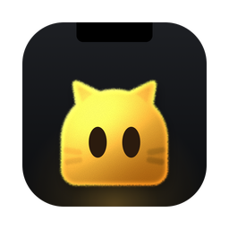

<meta charset="utf-8">
<title>Perch Design</title>
<link rel="stylesheet" href="dist/ui.css">
<style>
/* The real Perch UI on a faux desktop. Pick a scenario below; pick an avatar in the matrix. */
:root{--pg-bg:#F2F3F1;--pg-fg:#141816;--pg-muted:#5E6762;--pg-line:#D8DDD9;--pg-card:#FAFBFA}
@media (prefers-color-scheme:dark){:root:not([data-theme="light"]){--pg-bg:#0E1210;--pg-fg:#E8ECE9;--pg-muted:#8C9690;--pg-line:#252B28;--pg-card:#131815;color-scheme:dark}}
:root[data-theme="dark"]{--pg-bg:#0E1210;--pg-fg:#E8ECE9;--pg-muted:#8C9690;--pg-line:#252B28;--pg-card:#131815;color-scheme:dark}
html,body{overflow:auto!important;-webkit-user-select:text!important;user-select:text!important;background:var(--pg-bg)!important;color:var(--pg-fg);margin:0}
body{font-family:Inter,-apple-system,system-ui,sans-serif}
.wrap{max-width:880px;margin:0 auto;padding:28px 20px 64px;display:flex;flex-direction:column;gap:22px}
h1{font:600 22px/1.1 Inter,sans-serif;letter-spacing:-.02em;margin:0}
.sub{margin:6px 0 0;color:var(--pg-muted);font-size:14px;line-height:1.55;max-width:64ch}
h2{font:600 15px/1.2 Inter,sans-serif;letter-spacing:-.01em;margin:0 0 4px}
.note{font-size:12.5px;line-height:1.5;color:var(--pg-muted);margin:0}

/* the desktop stays in view while you pick scenarios */
.deskwrap{position:sticky;top:0;z-index:20;padding:10px 0;background:var(--pg-bg)}
/* a real desktop: Raycast wallpapers (raycast.com/wallpapers), seen from the top of the screen like the notch sees it */
.desk{position:relative;border-radius:16px;overflow:hidden;box-shadow:0 0 0 1px var(--pg-line);height:340px;
  background:#0b0d14 var(--wall,url(wallpapers/blue-distortion-1.webp)) center 12%/cover no-repeat}
.mb{position:absolute;inset:0 0 auto 0;height:34px;background:rgba(8,12,11,.38);backdrop-filter:blur(14px)}
.desk #scene{position:absolute;left:50%;top:0;margin-left:-240px}
/* a file dragged across the desktop as macOS draws it (fileDrag): it stays put, a see-through copy follows the pointer */
.fdrag{position:absolute;z-index:30;pointer-events:none}
.desk #scene{z-index:2}.fdrag.file{z-index:1;display:flex;flex-direction:column;align-items:center;gap:3px;width:96px;margin:-27px 0 0 -48px}
.fdrag.file span{font:500 11px/1.25 Inter,sans-serif;color:#fff;text-align:center;text-shadow:0 1px 2px rgba(0,0,0,.7);word-break:break-all}
.fdrag.ghost{opacity:.55;margin:-27px 0 0 -22px;transition:opacity .2s,transform .2s}
.fdrag.cur{margin:-2px 0 0 -2px;transition:opacity .3s}
.fdrag.cur i{position:absolute;left:11px;top:15px;width:15px;height:15px;border-radius:50%;background:#34c759;box-shadow:0 0 0 1.5px #fff;display:none}
.fdrag.cur i::before,.fdrag.cur i::after{content:"";position:absolute;left:50%;top:50%;background:#fff;border-radius:1px;transform:translate(-50%,-50%)}
.fdrag.cur i::before{width:7px;height:1.6px}.fdrag.cur i::after{width:1.6px;height:7px}
.fdrag.cur.copy i{display:block}
.now{position:absolute;z-index:6;left:14px;bottom:12px;font:500 12px Inter,sans-serif;color:rgba(255,255,255,.72);background:rgba(0,0,0,.35);border-radius:8px;padding:5px 9px;backdrop-filter:blur(8px)}

/* the disk image window (Installing): Finder's window as a stand-in, the picture inside is the real one that ships (install/background.html) */
.desk.inst{height:500px}
.fin{position:absolute;left:50%;top:52px;width:660px;margin-left:-330px;border-radius:14px;overflow:hidden;z-index:3;background:#161B19;box-shadow:0 0 0 .5px rgba(255,255,255,.14),0 0 0 .5px rgba(0,0,0,.6),0 26px 64px rgba(0,0,0,.6);transition:opacity .35s,transform .35s}
.fin .dbar{position:relative;height:28px;display:flex;align-items:center;justify-content:center;font:600 12.5px/1 Inter,sans-serif;color:#9AA39E;letter-spacing:-.005em}
.fin .dbar i{position:absolute;top:8.5px;width:11px;height:11px;border-radius:50%;background:#3A423E;box-shadow:inset 0 0 0 .5px rgba(255,255,255,.1)}
.fin .dbar i:nth-child(1){left:12px}.fin .dbar i:nth-child(2){left:30px}.fin .dbar i:nth-child(3){left:48px}
.fin .dpic{position:relative;width:660px;height:400px;overflow:hidden}
.fin iframe{display:block;border:0;width:660px;height:400px;pointer-events:none}
.fin .dic{position:absolute;top:128px;width:112px;margin-left:-56px;text-align:center;transition:opacity .25s}
.fin .dic img,.fin .dic svg{display:block;width:112px;height:112px;border-radius:24px;transition:background .2s}
.fin .dic span{display:inline-block;margin-top:9px;font:400 12px/16px Inter,sans-serif;color:#000;padding:0 6px;border-radius:5px}
.fin .dic.hl svg{background:rgba(255,255,255,.1)}.fin .dic.hl span{background:#2F6FE0;color:#fff}
.fin .dic.lift{opacity:.4}
.fin .dghost{position:absolute;width:112px;height:112px;margin:-56px 0 0 -56px;opacity:.7;pointer-events:none;transition:opacity .25s,transform .25s}
.fin .dghost.in{opacity:0;transform:scale(.45)}
.fin .dcur{position:absolute;z-index:4;width:17px;height:24px;margin:-2px 0 0 -2px;pointer-events:none;transition:opacity .3s}

/* display switch */
.disp{display:flex;flex-wrap:wrap;align-items:center;gap:6px;margin-top:8px;font-size:12.5px;color:var(--pg-muted)}
.disp button{font:500 12.5px Inter,sans-serif;color:var(--pg-fg);background:transparent;border:0;border-radius:8px;padding:6px 10px;cursor:pointer;box-shadow:inset 0 0 0 1px var(--pg-line)}
.disp button[aria-pressed="true"]{background:color-mix(in srgb,var(--pg-fg) 10%,transparent);box-shadow:inset 0 0 0 1px color-mix(in srgb,var(--pg-fg) 24%,transparent)}
.desk.ext .mb{height:24px}
/* the hardware notch: its pixels are not there, so whatever the card draws under it is gone. Painted over the card, with a thin pink edge to find it by. */
.desk #hw{position:absolute;left:50%;top:0;width:185px;height:32px;margin-left:-92.5px;background:#000;border-radius:0 0 11px 11px;box-shadow:0 0 0 1px rgba(255,70,190,.6);z-index:5;pointer-events:none}
.desk.ext #hw,.desk.noguide #hw{display:none}
/* scenarios: one category at a time, picked with tabs like Display and Wallpaper */
.tabs{display:flex;flex-wrap:wrap;gap:6px;margin:0 0 10px}
.tabs button{font:500 12.5px Inter,sans-serif;color:var(--pg-fg);background:transparent;border:0;border-radius:8px;padding:6px 10px;cursor:pointer;box-shadow:inset 0 0 0 1px var(--pg-line)}
.tabs button[aria-selected="true"]{background:color-mix(in srgb,var(--pg-fg) 10%,transparent);box-shadow:inset 0 0 0 1px color-mix(in srgb,var(--pg-fg) 24%,transparent)}
.tabs button i{font-style:normal;color:var(--pg-muted);margin-left:5px;font-variant-numeric:tabular-nums}
.tabs button{display:inline-flex;align-items:center;gap:6px}
.tabs button svg{width:14px;height:14px;flex:none;color:var(--pg-muted)}
.tabs button[aria-selected="true"] svg{color:var(--pg-fg)}
/* the scenarios are just their names; the line under them says what the pressed one shows */
/* the category is a drop-down; its scenarios are a uniform grid of equal cells */
.dd{position:relative;display:inline-block;margin:0 0 12px}
.dd>button{display:inline-flex;align-items:center;gap:8px;min-width:230px;font:500 13px Inter,sans-serif;color:var(--pg-fg);background:var(--pg-card);border:0;border-radius:9px;padding:8px 10px;cursor:pointer;box-shadow:inset 0 0 0 1px var(--pg-line)}
.dd>button:hover,.dd.open>button{box-shadow:inset 0 0 0 1px color-mix(in srgb,var(--pg-fg) 24%,transparent)}
.dd svg{width:15px;height:15px;flex:none;color:var(--pg-muted)}
.dd .cnt{margin-left:auto;font-weight:400;font-size:12px;color:var(--pg-muted);font-variant-numeric:tabular-nums}
.dd>button .chev{margin-left:6px;width:13px;height:13px}
.dd .menu{display:none;position:absolute;left:0;top:calc(100% + 4px);z-index:40;min-width:100%;padding:4px;background:var(--pg-card);border-radius:11px;box-shadow:0 0 0 1px var(--pg-line),0 14px 34px rgba(0,0,0,.45)}
.dd.open .menu{display:block}
.dd .menu{padding:5px}.dd .menu button+button{margin-top:2px}
.dd .menu button{display:flex;align-items:center;gap:9px;width:100%;font:500 13px Inter,sans-serif;color:var(--pg-fg);background:transparent;border:0;border-radius:7px;padding:8px 10px;cursor:pointer;text-align:left}
.dd .menu button:hover,.dd .menu button.at{background:color-mix(in srgb,var(--pg-fg) 8%,transparent)}
.dd .menu button[aria-selected="true"]{background:color-mix(in srgb,var(--pg-fg) 12%,transparent)}
.dd .menu button[aria-selected="true"] svg{color:var(--pg-fg)}
.group{display:grid;grid-template-columns:repeat(auto-fill,minmax(190px,1fr));gap:8px}
.what{font-size:13px;line-height:1.5;color:var(--pg-muted);margin:12px 0 0;min-height:2.6em;max-width:70ch}
.group[hidden],.sc[hidden],.dd[hidden]{display:none}
.dd2{margin-left:8px}.dd2>button{min-width:150px}
.sc{display:flex;align-items:center;min-height:42px;text-align:left;font:inherit;color:var(--pg-fg);background:transparent;border:0;border-radius:8px;padding:6px 10px;cursor:pointer;transition:background .15s;box-shadow:inset 0 0 0 1px var(--pg-line)}
.sc:hover{background:color-mix(in srgb,var(--pg-fg) 6%,transparent)}
.sc b{font:500 12.5px/1.3 Inter,sans-serif;display:-webkit-box;-webkit-line-clamp:2;-webkit-box-orient:vertical;overflow:hidden}
.sc[aria-pressed="true"]{background:color-mix(in srgb,var(--pg-fg) 10%,transparent);box-shadow:inset 0 0 0 1px color-mix(in srgb,var(--pg-fg) 24%,transparent)}

/* avatar matrix */
.matrix{background:var(--pg-card);border-radius:14px;box-shadow:0 0 0 1px var(--pg-line);overflow:hidden}
.mrow{display:grid;grid-template-columns:150px repeat(4,1fr);align-items:center}
.mrow>*{padding:10px 12px}
.mhead{font:600 12px Inter,sans-serif;color:var(--pg-muted);text-transform:uppercase;letter-spacing:.02em}
.pick{display:flex;flex-direction:column;gap:2px;text-align:left;font:inherit;color:var(--pg-fg);background:transparent;border:0;cursor:pointer;border-radius:0;padding:12px}
.pick b{font:500 13px Inter,sans-serif}.pick span{font-size:12px;color:var(--pg-muted)}
.mrow.sel{background:color-mix(in srgb,var(--pg-fg) 8%,transparent)}
.mrow:not(.hd):hover{background:color-mix(in srgb,var(--pg-fg) 5%,transparent)}
.cell{display:grid;place-items:center;height:76px}
.cell .stage{display:grid;place-items:center;width:100%;height:100%;background:#0b0e0d;border-radius:10px}
.cell .cr{position:relative!important;left:auto!important;top:auto!important;transform:none!important;width:38px!important;height:38px!important}
.badge{display:inline-block;margin-left:6px;font:500 11px Inter,sans-serif;color:var(--pg-bg);background:var(--pg-fg);border-radius:6px;padding:1px 6px;vertical-align:1px}
/* ?record (scripts/record.sh): only the desktop, filling the window */
.rec .wrap{max-width:none;padding:0;gap:0}.rec .wrap>*:not(.deskwrap){display:none}
/* Settings and setup are as tall as the panel (440 pt): the desk grows to show their last rows */
:root:not(.rec) .desk:has(.n[data-s=set]),:root:not(.rec) .desk:has(.n[data-s=onb]){height:452px}
.rec .deskwrap{position:static;padding:0}.rec .disp,.rec .now{display:none}.rec .desk{border-radius:0;box-shadow:none;height:100vh}
.rec.play .now{display:block;left:22px;right:auto;top:calc(50% + 12px);bottom:auto;width:190px;background:none;backdrop-filter:none;padding:0;font-size:12.5px;line-height:1.35;color:rgba(255,255,255,.72);text-shadow:0 1px 8px rgba(0,0,0,.6)}
/* a PR demo's title for each scene, big enough to read in a GIF, in the empty space left of the card; the step caption (.now) under it */
.ttl{display:none}.rec.play .ttl{display:block;position:absolute;z-index:6;left:22px;width:190px;bottom:calc(50% - 6px);font:600 19px/1.22 Inter,sans-serif;letter-spacing:-.01em;color:#fff;text-shadow:0 1px 12px rgba(0,0,0,.55)}.rec.play .desk #hw{box-shadow:none}
@media (max-height:760px){.deskwrap{position:static}}
@media (max-width:640px){.mrow{grid-template-columns:100px repeat(4,1fr)}.mrow>*{padding:8px 6px}}
</style>
<main class="wrap">
  <header>
    <h1>Perch</h1>
    <p class="sub">The real interface, the same code that runs in the app, with sample projects. Pick a scenario to see it on the desktop below.</p>
  </header>

  <div class="deskwrap">
    <div class="desk" id="desk"><div class="mb"></div><div id="scene"></div><div id="hw" title="The hardware notch"></div><div class="now" id="now">Welcome back</div></div>
    <div class="disp" id="disp"><span>Display</span><button data-n="1" aria-pressed="true">MacBook with notch</button><button data-n="0" aria-pressed="false">External display, no notch</button>
      <button id="hwtoggle" aria-pressed="true" title="Paint the hardware notch over the card, so anything under it shows as cut off">Hardware notch</button><span style="margin-left:14px">Wallpaper</span><span id="walls" style="display:contents"><button data-w="blue-distortion-1" aria-pressed="true">Blue</button><button data-w="red-distortion-1" aria-pressed="false">Red</button><button data-w="chromatic-dark-1" aria-pressed="false">Chromatic</button></span></div>
  </div>

  <section>
    <h2>Scenarios</h2>
    <div class="groups" id="groups"></div>
    <p class="what" id="what"></p>
  </section>

  <p class="note">Wallpapers by <a href="https://www.raycast.com/wallpapers" style="color:inherit">Raycast</a>. The glow is internal: light rising from the bottom edge of the card, tinted by status (orange needs you, green done, the character's colour otherwise). At rest the character is hidden; while you work, the notch itself says what happened (the live activity).</p>
</main>
<script src="orbs.js"></script>
<script src="app.js"></script>
<script>
(function () {
  var d = window.perchDev; if (!d) return;
  var charRun = 0;   /* the character scenarios' timers; any scenario started after stops them */
  function reply(typed, send) { return function () { d.project(1); d.show('open'); setTimeout(function () { window.perch.replyMenu(true); if (typed) { var r = document.querySelector('.r-in'); r.value = 'Match by vendor first, then by amount.'; r.dispatchEvent(new Event('input')); if (send) setTimeout(function () { r.dispatchEvent(new KeyboardEvent('keydown', { key: 'Enter', bubbles: true })); }, 1200); } }, 700); }; }
  /* selects the words `from` to `to` (found in the text) inside the element, as a drag across them would */
  function selectWords(sel, from, to) {
    var el = document.querySelector(sel); if (!el) return;
    var w = document.createTreeWalker(el, NodeFilter.SHOW_TEXT), nodes = [], all = '', t;
    while ((t = w.nextNode())) { nodes.push([t, all.length]); all += t.data; }
    var a = all.indexOf(from), b = to ? all.indexOf(to, a) + to.length : a + from.length; if (a < 0 || b < a) return;
    var at = function (i) { for (var k = nodes.length - 1; k >= 0; k--) if (nodes[k][1] <= i) return [nodes[k][0], i - nodes[k][1]]; };
    var r = document.createRange(), s = at(a), e = at(b); r.setStart(s[0], s[1]); r.setEnd(e[0], e[1]);
    getSelection().removeAllRanges(); getSelection().addRange(r);
  }
  /* the same, word by word from `from`, as a drag would grow it, starting after `delay` ms */
  function selectSlowly(me, sel, from, to, delay) {
    setTimeout(function () {
      var el = document.querySelector(sel); if (!el || me !== charRun) return;
      var all = el.textContent, a = all.indexOf(from), b = all.indexOf(to, a) + to.length, ends = [], re = /\S+/g, m;
      re.lastIndex = a; while ((m = re.exec(all)) && m.index < b) ends.push(all.slice(a, Math.min(b, m.index + m[0].length)));
      ends.forEach(function (upTo, i) { setTimeout(function () { if (me === charRun) selectWords(sel, upTo); }, i * 70); });
    }, delay);
  }
  /* presses one of the live activity's buttons the way the pointer would: it lights under the pointer, then clicks (or, with `fail`, the answer comes too late) */
  function press(a, ms, fail) { var me = charRun; setTimeout(function () { if (me !== charRun) return; var b = document.querySelector('.act [data-a=' + a + ']'); if (!b) return; b.classList.add('hv'); setTimeout(function () { if (me !== charRun) return; b.classList.remove('hv'); if (fail) d.sentFail(a); else b.click(); }, 600); }, ms || 1400); }
  /* a Motion scenario's timeline: at(ms, caption, f) runs f after ms, unless another scenario started since */
  function motionAt() { var me = charRun; return function (ms, label, f) { setTimeout(function () { if (me !== charRun) return; if (label) now.textContent = label; f(); }, ms); }; }
  function Q(text, header, opts, multi) { return { text: text, header: header, multi: !!multi, options: opts.map(function (o) { return o[0]; }), notes: opts.map(function (o) { return o[1] || ''; }) }; }
  var P0 = { status: { kind: 'attention', text: 'Claude wants to run a command', app: 'claude' }, ask: { kind: 'permission', title: 'Claude wants to run a command', subject: 'npm run build && npm test -- --watch=false', options: [], answerable: true } };
  var CLAUDE_ASKS = { status: { kind: 'attention', text: 'Claude asked you something', app: 'claude' }, attention: true, line: 'Waiting on you for 2m',
    ask: { kind: 'question', title: 'Claude asked you something', subject: 'Match invoices by vendor first, or by amount?', answerable: true,
      questions: [Q('Match invoices by vendor first, or by amount?', 'Matching', [['Vendor first', 'Group by vendor, then match amounts'], ['Amount first', 'Exact amounts first, any vendor'], ['Both, vendor wins', 'Try vendor first, fall back to amount']])] } };
  /* the same asks when Perch cannot answer them (no hooks, or Bypass permissions): read from the transcript, shown read-only */
  var READ_ONE = { status: CLAUDE_ASKS.status, attention: true, line: 'Waiting on you for 2m', ask: Object.assign({}, CLAUDE_ASKS.ask, { answerable: false, why: 'Perch can\'t answer this one. Turn on Live status in Settings.' }) };
  /* the real one from a room-planner session: four questions at once */
  var FOUR_ASKS = { name: 'room-planner-prototype', status: { kind: 'attention', text: 'Claude asked you something', app: 'claude' }, attention: true, line: 'Waiting on you for 1m',
    ask: { kind: 'question', title: 'Claude asked you something', subject: 'When no environment is set, what should the shelter stand in?', answerable: true, questions: [
      Q('When no environment is set, what should the shelter stand in?', 'Backdrop', [['Photo studio (Recommended)', 'A seamless light backdrop that curves from floor to wall, soft studio light and a soft contact shadow'], ['Engineering stage', 'A light floor with a fine measured grid and subtle dimension marks'], ['Dark showroom', 'A deep charcoal backdrop with a key light and rim light'], ['Concrete yard', 'The shelter on a concrete pad in a neutral, light-grey yard']]),
      Q('How should it be lit?', 'Lighting', [['Soft daylight (Recommended)', 'Even, slightly cool light from above with gentle shadows'], ['Dramatic key light', 'A strong light from one side with a rim light'], ['Warm late sun', 'Low, warm light and long shadows; it shifts the paint colours']]),
      Q('What should the floor do?', 'Floor', [['Subtle reflection (Recommended)', 'A satin floor that reflects the shelter faintly'], ['Matte with shadow', 'A plain matte floor with a soft contact shadow'], ['Measured grid', 'A matte floor with a fine metric grid']]),
      Q('Which extras should it show?', 'Extras', [['Dimensions', 'Width, depth and height labels'], ['Door swing', 'The arc each door sweeps'], ['North arrow', 'Which way the shelter faces']], true)
    ] } };
  /* a load test, twelve runs in nine columns: taller and wider than the message, so the table scrolls in its own window */
  /* replies that list things: a bold line straight into bullets, numbers, nested items, a table after a list */
  var SAID_BULLETS = '**Options for the next release**\n- Serve the feed from somewhere that doesn’t cache for 5 minutes, such as a GitHub Pages site or a release asset URL.\n- Or leave it and have `release.sh` print “live in about 5 minutes”.\n\nI would take the first: it also makes the appcast faster for everyone.';
  var SAID_NUMBERS = 'The release goes out in this order:\n1. Bump the version and write `release-notes/0.4.0.md`\n2. Run `./scripts/release.sh --publish`\n3. Wait for the appcast to refresh, about 5 minutes\n4. Check that an older copy offers the update\n\nStep 3 is the slow one.';
  var SAID_NESTED = '## What changed\n- The reply card\n  - Bullet and numbered lists now draw\n  - Nested items sit one step in\n    - and a third level too\n- The design page\n  - Four new scenarios under *Reply formatting*\n- Tests: **all green**, nothing new to cover\n\nNext: open the PR.';
  var SAID_MIXED = '**Where September stands**\n- 41 of 43 invoices matched\n- Two are still open:\n  1. A Figma seat refund\n  2. A Linear credit note\n\n| Vendor | Matched |\n|---|---|\n| Hetzner | 100% |\n| Linear | 94% |\n| Figma | 75% |\n\nShould I book the two as credits against October?';
  var WIDE = 'Ran the load test against the new limiter, twelve runs. Every run held its limit:\n\n| Run | Requests | Allowed | Rejected (429) | p50 | p95 | p99 | Error rate | Notes |\n|---|---|---|---|---|---|---|---|---|\n' +
    '| 121 | 20,000 | 100% | 0 | 12 ms | 27 ms | 41 ms | 0.00% | cold start |\n' +
    '| 122 | 20,000 | 100% | 0 | 13 ms | 28 ms | 43 ms | 0.00% | warm cache |\n' +
    '| 123 | 20,000 | 97% | 612 | 14 ms | 30 ms | 52 ms | 0.01% | burst of 20 |\n' +
    '| 124 | 20,000 | 100% | 0 | 13 ms | 29 ms | 44 ms | 0.00% | after the fix |\n' +
    '| 125 | 20,000 | 88% | 2,410 | 16 ms | 38 ms | 70 ms | 0.04% | burst of 40 |\n' +
    '| 126 | 20,000 | 100% | 0 | 12 ms | 27 ms | 40 ms | 0.00% | partner keys |\n' +
    '| 127 | 20,000 | 99% | 204 | 14 ms | 31 ms | 49 ms | 0.00% | two regions |\n' +
    '| 128 | 20,000 | 100% | 0 | 14 ms | 31 ms | 48 ms | 0.00% | warm cache |\n' +
    '| 129 | 20,000 | 94% | 1,188 | 15 ms | 34 ms | 58 ms | 0.02% | burst of 30 |\n' +
    '| 130 | 20,000 | 100% | 0 | 13 ms | 28 ms | 42 ms | 0.00% | new pool |\n' +
    '| 131 | 20,000 | 92% | 1,604 | 15 ms | 35 ms | 61 ms | 0.02% | burst of 20 |\n' +
    '| 132 | 20,000 | 100% | 0 | 13 ms | 29 ms | 44 ms | 0.00% | after the fix |\n' +
    '\nShould I raise the burst to 40 for the partner keys?';
  /* A file dragged from the desktop, slowly, as macOS draws it: the file stays where it is and a see-through copy follows
     the pointer, which gains a green plus over a place that takes it. The card hears what the app's drag events would
     tell it (dragOver as the file comes on and goes off, paths on the drop), and the character's eyes follow the pointer
     as the app feeds it (cursor). legs: [[where, ms, caption]], where is a point on the desk, a function giving one, or
     'drop'; a leg with no where waits. */
  var FILE_SVG = '<svg viewBox="0 0 44 54" width="44" height="54"><path d="M4 2h24l12 12v36a2 2 0 0 1-2 2H4a2 2 0 0 1-2-2V4a2 2 0 0 1 2-2z" fill="#f4f5f7"/><path d="M28 2v10a2 2 0 0 0 2 2h10z" fill="#cfd3da"/><rect x="8" y="20" width="28" height="22" rx="2" fill="#7d9be0"/><path d="M8 38l9-9 6 6 5-5 8 8v2a2 2 0 0 1-2 2H10a2 2 0 0 1-2-2z" fill="#3e5ea9"/><circle cx="29" cy="26" r="2.6" fill="#f6d36b"/></svg>';
  var CURSOR_SVG = '<svg viewBox="0 0 20 28" width="17" height="24"><path d="M2 1.5v20.2l5-4.6 3.3 7.6 3.4-1.5-3.3-7.4h6.8z" fill="#000" stroke="#fff" stroke-width="1.6" stroke-linejoin="round"/></svg><i></i>';
  var dragRun = 0;
  function fileDragStop() { dragRun++; document.querySelectorAll('.fdrag').forEach(function (e) { e.remove(); }); }
  function fileDrag(path, legs) {
    fileDragStop();
    var me = ++dragRun, desk = document.getElementById('desk'), H = desk.clientHeight;
    var mk = function (cls, html) { var e = document.createElement('div'); e.className = 'fdrag ' + cls; e.innerHTML = html; desk.appendChild(e); return e; };
    var name = path.split('/').pop(), start = [desk.clientWidth - 70, H - 70];
    var file = mk('file', FILE_SVG + '<span>' + name + '</span>'), ghost = mk('ghost', FILE_SVG), cur = mk('cur', CURSOR_SVG);
    var at = start.slice(), over = false, was = false;
    var put = function (e, p) { e.style.left = p[0] + 'px'; e.style.top = p[1] + 'px'; };
    put(file, start); put(ghost, start); ghost.style.display = 'none'; put(cur, [start[0] - 60, start[1] - 30]);
    var card = function () { var n = document.querySelector('#scene .n'), r = n.getBoundingClientRect(), dr = desk.getBoundingClientRect(); return ['open', 'ns'].indexOf(document.querySelector('#scene .n').dataset.s) >= 0 ? { l: r.left - dr.left, t: r.top - dr.top, r: r.right - dr.left, b: r.bottom - dr.top } : null; };
    var frame = function () {
      put(ghost, at); put(cur, at);
      var c = card(), on = !!c && at[0] > c.l && at[0] < c.r && at[1] > c.t && at[1] < c.b;
      var sc = document.getElementById('scene').getBoundingClientRect(), dr = desk.getBoundingClientRect(), x = at[0] + dr.left - sc.left, y = at[1] + dr.top - sc.top;
      if (on !== over) { over = on; cur.classList.toggle('copy', on); }
      if (on || was) window.perch.dragOver(on ? 1 : 0, at[0] + dr.left, at[1] + dr.top);
      was = on;
      window.perch.cursor(x, y);
    };
    var ease = function (t) { return t < .5 ? 2 * t * t : 1 - Math.pow(-2 * t + 2, 2) / 2; };
    var i = 0;
    (function next() {
      if (me !== dragRun) return;
      var leg = legs[i++]; if (!leg) return;
      if (leg[2]) now.textContent = leg[2];
      var where = leg[0];
      if (where === 'pick') { cur.style.transition = 'left .55s cubic-bezier(.4,0,.2,1), top .55s cubic-bezier(.4,0,.2,1)'; put(cur, start); setTimeout(function () { if (me !== dragRun) return; cur.style.transition = ''; ghost.style.display = ''; at = start.slice(); frame(); next(); }, leg[1]); return; }
      if (where === 'drop') {
        ghost.style.opacity = '0'; ghost.style.transform = 'scale(.4)'; cur.classList.remove('copy');
        window.perch.paths([path]); over = false;
        setTimeout(function () { if (me === dragRun) { cur.style.opacity = '0'; next(); } }, leg[1]); return;
      }
      if (!where) { setTimeout(next, leg[1]); return; }
      var from = at.slice(), t0 = 0;
      (function step(ts) {
        if (me !== dragRun) return;
        if (!t0) t0 = ts;
        var to = typeof where === 'function' ? where() : where, k = ease(Math.min(1, (ts - t0) / leg[1]));
        at = [from[0] + (to[0] - from[0]) * k, from[1] + (to[1] - from[1]) * k]; frame();
        if (k < 1) requestAnimationFrame(step); else next();
      })(performance.now());
    })();
  }
  /* points on the desk, measured when the file gets there: the middle of the card, and the reply field */
  function deskPoint(el, dx, dy) { var r = el.getBoundingClientRect(), dr = document.getElementById('desk').getBoundingClientRect(); return [r.left - dr.left + r.width / 2 + (dx || 0), r.top - dr.top + r.height / 2 + (dy || 0)]; }
  function onCard(dx, dy) { return function () { var n = document.querySelector('#scene .n'), r = n.getBoundingClientRect(), dr = document.getElementById('desk').getBoundingClientRect(); return [r.left - dr.left + r.width / 2 + dx, r.top - dr.top + dy]; }; }
  /* near the field's right end, so the file does not hide what the field says */
  function onField() { var w = document.querySelector('.r-in').getBoundingClientRect().width; return deskPoint(document.querySelector('.r-in'), w / 2 - 46, 0); }
  function onRow(name) { return function () { var r = [].filter.call(document.querySelectorAll('.nw .nrow'), function (x) { return (x.querySelector('.nm') || {}).textContent === name; })[0]; return deskPoint(r, 30, 0); }; }
  function onPrompt() { var el = document.querySelector('.nw-in'), w = el.getBoundingClientRect().width; return deskPoint(el, w / 2 - 46, 0); }
  function offCard() { var w = document.getElementById('desk').clientWidth, H = document.getElementById('desk').clientHeight; return [Math.max(36, w / 2 - 255), H * .42]; }
  var FOUR = [{ id: 'claude', name: 'Claude Code', count: 9, enabled: true }, { id: 'codex', name: 'Codex', count: 2, enabled: true }, { id: 'opencode', name: 'OpenCode', count: 1, enabled: true }, { id: 'pi', name: 'pi', count: 3, enabled: false }];
    /* every way an update can fail: what the notch says (a line), what Settings says beside Updates (short), what you can do (fix: try again, move, or nothing) */
    var UPD_ERR = [
      ['Offline', { during: 'check', short: 'no connection', problem: 'No internet connection. Try again in a moment.' }],
      ['Feed unreadable', { during: 'check', short: 'couldn\u2019t check', problem: 'Perch couldn\u2019t read the list of versions. Try again later.' }],
      ['In Downloads', { during: 'update', fix: 'move', short: 'move Perch to Applications', problem: 'Move Perch to Applications, then open it again.' }],
      ['Download stopped', { during: 'update', short: 'couldn\u2019t download', problem: 'The download didn\u2019t finish. Try again.' }],
      ['Failed the safety check', { during: 'update', short: 'couldn\u2019t verify', problem: 'The update didn\u2019t pass its safety check, so Perch left it alone.' }],
      ['Can\u2019t write here', { during: 'update', fix: 'move', short: 'can\u2019t update here', problem: 'Perch can\u2019t replace itself in this folder. Move it to Applications.' }],
      ['Could not install', { during: 'update', short: 'couldn\u2019t install', problem: 'The update could not be installed. Try again.' }],
      ['Could not quit', { during: 'update', short: 'couldn\u2019t quit', problem: 'Perch couldn\u2019t quit to finish updating. Try again.' }],
      ['Could not reopen', { during: 'update', fix: 'none', short: 'open Perch again', problem: 'Perch updated but couldn\u2019t reopen. Open it again.' }],
      ['Mac too old', { during: 'check', fix: 'none', short: 'needs macOS 26', problem: 'This version needs an Apple silicon Mac on macOS 26.' }]
    ];
  var GROUPS = [
    ['Coming back', [
      ['Needs your OK', 'Claude wants to run a command. Allow with A, Deny with D, right from the notch.', function () { d.project(0); d.show('open'); }],
      ['Asked you something', 'One question with a few choices: press 1, 2 or 3.', function () { d.variant(3, CLAUDE_ASKS); }],
      ['Asked you something, by hover', 'A card you hover open leaves the keyboard where it was, except when it shows something to answer: then 1, 2, 3 (or A and D) and Esc are Perch\u2019s. Otherwise they would land in Claude\u2019s own question behind it, where Esc dismisses it.', function () { d.variant(3, CLAUDE_ASKS); }],
      ['Asked you four things', 'A real one: four questions, one at a time. A number answers and moves on; the last is pick-several. Left goes back.', function () { d.variant(0, FOUR_ASKS); }],
      ['Asked you something, read only', 'No hooks, so Perch cannot answer it: the question and its choices to read, nothing to press but Open Claude (a reply would dismiss the question).', function () { d.variant(3, READ_ONE); }],
      ['Asked you something, read only, Live status on', 'Live status is on but this question never reached Perch (or Codex, which asks in its own app): the reason is just where to answer.', function () { d.variant(3, Object.assign({}, READ_ONE, { ask: Object.assign({}, READ_ONE.ask, { why: 'Answer in Claude.' }) })); }],
      ['Asked you four things, read only', 'Four questions and Perch cannot answer: the first, and \u201cQuestion 1 of 4\u201d on the grey line. The rest are in Claude.', function () { d.variant(0, Object.assign({}, FOUR_ASKS, { ask: Object.assign({}, FOUR_ASKS.ask, { answerable: false, why: 'Perch can\'t answer this one. Turn on Live status in Settings.' }) })); }],
      ['Has a plan', 'A plan is for reading, so Pick up opens it.', function () { d.variant(3, { status: { kind: 'attention', text: 'Claude has a plan for you', app: 'claude' }, attention: true, line: 'Waiting on you for 6m', ask: { kind: 'plan', title: 'Claude has a plan for you', subject: 'Move the invoice matcher to a background job and add a review screen', options: [], answerable: false } }); }],
      ['Codex needs your OK', 'Codex approves in its own app: Pick up goes there.', function () { d.variant(2, { status: { kind: 'attention', text: 'Codex wants to run a command', app: 'codex' }, attention: true, line: 'Waiting on you for 1m', ask: { kind: 'permission', title: 'Codex wants to run a command', subject: 'rm -rf build && swift build -c release', options: [], answerable: false } }); }],
      ['Finished', 'Finished while you were away: what it did, and what is next.', function () { d.project(1); d.show('open'); }],
      ['Finished, already seen', 'No green, just its age. Perch would not speak up for this.', function () { d.variant(1, { fresh: false, line: '48m ago' }); }],
      ['Stopped on an error', 'The turn ended on an API error.', function () { d.variant(1, { status: { kind: 'attention', text: 'Claude stopped on an error', app: 'claude' }, attention: true, fresh: true, next: '' }); }],
      ['Working', 'Codex is mid-run: what it says it is doing, and on the Now row the step it is on.', function () { d.project(2); d.show('open'); }],
      ['Your words: you said', 'When the agent left nothing to quote, the card shows your own last message. It says You said, in grey, so your words read first; You asked only for a question.', function () { d.variant(1, { topic: 'Test Perch shimmer', headline: '', context: 'You said: \u201cPerch shimmer test. Reply with just ok, use no tools.\u201d', next: '', fresh: false, line: '8h ago', status: { kind: 'idle', text: 'Claude finished', app: 'claude' } }); }],
      ['Your words: you asked', 'Your last message was a question (a sentence ending in a question mark): You asked.', function () { d.variant(1, { topic: 'Hero jump on Safari', headline: '', context: 'You asked: \u201cwhy does the hero jump on Safari when the poster loads?\u201d', next: '', fresh: false, line: '8h ago', status: { kind: 'idle', text: 'Claude finished', app: 'claude' } }); }],
      ['Working, a long title', 'A title that runs long has its whole line: the status sits on the grey line under it, at the right.', function () { d.variant(2, { topic: 'Make Reply on a hovered card take one click and show the hand over it' }); }]
    ]],
    ['More agents', [
      ['OpenCode, working', 'OpenCode in Ghostty: Ghostty\u2019s icon with OpenCode\u2019s mark on its corner, what it says it is doing, and the step on the Now row.', function () { d.project(10); d.show('open', false, true); }],
      ['OpenCode needs your OK', 'OpenCode asks before running a command. Allow with A or Deny with D from the notch, or answer in OpenCode: whichever comes first.', function () { d.variant(10, { status: { kind: 'attention', text: 'OpenCode wants to run a command', app: 'opencode' }, attention: true, now: null, line: 'Waiting on you for 1m', ask: { kind: 'permission', title: 'OpenCode wants to run a command', subject: 'rm -rf dist && bun run build', options: [], answerable: true } }); }],
      ['OpenCode asked you something', 'Its question tool, answered with a number.', function () { d.variant(10, { status: { kind: 'attention', text: 'OpenCode asked you something', app: 'opencode' }, attention: true, now: null, line: 'Waiting on you for 2m', ask: { kind: 'question', title: 'OpenCode asked you something', subject: 'Should Tab leave the table or move to the next cell?', answerable: true, questions: [Q('Should Tab leave the table or move to the next cell?', 'Tab key', [['Leave the table (Recommended)', 'Like a native grid: arrows move, Tab leaves'], ['Next cell', 'Like a spreadsheet']])] } }); }],
      ['pi in herdr, finished', 'pi in a herdr pane, with herdr open in Ghostty. Pick up focuses that pane in herdr and brings Ghostty forward. Hover the icon for where it runs.', function () { d.project(11); d.show('open', false, true); }],
      ['Claude in Conductor', 'A workspace in Conductor: Conductor\u2019s icon with Claude\u2019s mark on its corner, and Open Conductor on the button. Pick up brings Conductor forward and opens that workspace. Hover the icon for where it runs.', function () { d.project(12); d.show('open', false, true); }],
      ['pi asked you something', 'One of pi\u2019s extensions asks something in the terminal. The card shows it; Pick up goes to its pane to answer.', function () { d.variant(11, { status: { kind: 'attention', text: 'pi asked you something', app: 'pi' }, attention: true, fresh: true, line: 'Waiting on you for 3m', next: '', ask: { kind: 'question', title: 'pi asked you something', subject: 'Overwrite failed.txt?', questions: [], answerable: false } }); }],
      ['All sessions, every agent', 'The list with Claude, Codex, OpenCode and pi side by side.', function () { d.show('switcher'); }],
      ['Settings: four agents', 'Apps shows the agents Perch reads as their icons, with a chevron for the menu.', function () { d.settings({ sources: FOUR }); }],
      ['Settings: the Apps menu', 'Return (or a click) opens it: a check for each agent and how many sessions it has. Up and Down move, Return switches one on or off, Esc or Left closes the menu.', function () { d.settings({ sources: FOUR }); setTimeout(function () { window.perch.setKey('down'); window.perch.setKey('down'); window.perch.setKey('enter'); }, 400); }],
      ['Onboarding: four agents', 'Choose your apps lists only the agents found on this Mac; here, all four.', function () { d.onboarding(4, true, false, null, true); }]
    ]],
    ['Replying', [
      ['Reply: empty', 'Press R. Claude\u2019s own last message takes the summary\u2019s place, so you answer what you read, with your own last message above it as a bubble, a scroll up; a long one opens at its end and scrolls. Esc puts the card back.', reply(false)],
      ['Reply: typed', 'Return sends. Esc goes back to the card and keeps your words: R brings them back.', reply(true)],
      ['Reply: kept while you look away', 'You start a reply, then click in Finder to copy a path: the card makes way and keeps your words. Command+Option within five minutes brings it back as you left it, reply open, words in place, caret after them. A file pasted from Finder, or dropped on the card, is attached as a chip over the field.', function () {
        var me = charRun, at = function (ms, f) { setTimeout(function () { if (me === charRun) f(); }, ms); };
        d.project(1); d.show('open', false, true);
        at(700, function () { window.perch.replyMenu(true); var r = document.querySelector('.r-in'); r.value = 'Bring it back for desktop only, and keep this poster for phones:'; r.dispatchEvent(new Event('input')); });
        at(2800, function () { now.textContent = 'A click in Finder: the card makes way, your words are kept'; d.show('idle'); });
        at(4600, function () { now.textContent = 'Command+Option: back as you left it'; d.show('open', false, true); window.perch.replyMenu(true); });
        at(6600, function () { now.textContent = 'A file pasted from Finder is attached: a chip over the field'; window.perch.paths(['/Users/you/Desktop/hero-poster-1440.png']); });
      }],
      ['A file dragged onto the card', 'A file from the desktop, dragged slowly. Over the card the pointer gains a green plus (macOS draws it when the place takes the file), the reply opens for it, its field lights up and says what a drop does, more so with the file right on it, and the character looks on wide-eyed, its eyes on the file. Dragged off, it all goes back. Brought back and dropped on the field: it is attached, a chip over the field, and the character hops.', function () {
        d.project(1); d.show('open', false, true);
        setTimeout(function () {
          fileDrag('/Users/you/Desktop/hero-poster.png', [
            [null, 500, 'A file on the desktop'],
            ['pick', 750, 'You take it'],
            [onCard(-70, 115), 1300, 'Dragging it onto the card'],
            [null, 700, 'Over the card: the reply opens, its field lights up, the character watches the file'],
            [onCard(60, 150), 1000],
            [offCard, 1200, 'Off the card again'],
            [null, 900, 'Off the card: it all goes back'],
            [onCard(-20, 120), 1200, 'Back onto the card'],
            [onField, 800, 'Onto the reply field'],
            [null, 1100, 'Right on the field: release to attach it'],
            ['drop', 1500, 'Dropped: attached as a chip over the field, and the character hops']
          ]);
        }, 700);
      }],
      ['A file dragged onto a reply', 'While you write, a file dragged onto the card lights the field, more so right on it; dropped, it is attached: a chip over the field, its name and an x to take it off. Sent, its path follows your words.', function () {
        reply(true)();
        setTimeout(function () {
          fileDrag('/Users/you/Desktop/invoice-scan.png', [
            [null, 500, 'Writing a reply, with a file on the desktop'],
            ['pick', 750, 'You take it'],
            [onCard(40, 110), 1200, 'Dragging it onto the card'],
            [null, 700, 'Over the card: the field lights up, the character watches the file'],
            [onField, 800, 'Onto the reply field'],
            [null, 1100, 'Right on the field: release to attach it'],
            ['drop', 1500, 'Dropped: attached, a chip over the field']
          ]);
        }, 1400);
      }],
      ['Reply to a terminal', 'Return sends it into its terminal tab: the card clears, the words shoot up into the notch and it swallows them with a green ripple, the character hops, and the card folds into one line: the session on the left, Sent with a paper plane on the right, for a couple of seconds.', function () { d.project(7); d.show('open'); setTimeout(function () { window.perch.replyMenu(true); var r = document.querySelector('.r-in'); r.value = 'Add a test for the burst limit'; setTimeout(function () { r.dispatchEvent(new KeyboardEvent('keydown', { key: 'Enter', bubbles: true })); }, 1200); }, 700); }],
      ['Reply to the Claude app', 'Return sends it into Claude in the background, its window left behind: the card folds into the same Sent line. Should Claude not take it, the line goes and Claude comes forward with your words to paste.', reply(true, true)],
      ['Reply: no Accessibility', 'Perch cannot type for you yet, so Send reads Allow and send. Return or a click asks for Accessibility, as Settings does, and keeps your words.', function () { d.noAccess(); reply(true)(); }],
      ['Reply: waiting for access', 'System Settings is open on Accessibility. Your words stay in the field and go out the moment Perch is on. Esc goes back to the card and drops the wait. If it never comes on, they are copied and the session opens, as before.', function () { d.noAccess(true); reply(true)(); }],
      ['Reply copied', 'When Perch could not type it, a word beside the notch says so.', function () { d.show('idle', true); setTimeout(function () { d.say('Reply copied'); }, 700); }],
    ]],
    ['Reply formatting', [
      ['Reply: a bulleted list', 'A bold line straight into bullets, no blank line between. Quiet grey bullets, items that wrap line up under their words.', function () { d.variant(1, { said: SAID_BULLETS }); setTimeout(function () { window.perch.replyMenu(true); }, 700); }],
      ['Reply: a numbered list', 'The agent\u2019s own numbers, in grey, aligned.', function () { d.variant(1, { said: SAID_NUMBERS }); setTimeout(function () { window.perch.replyMenu(true); }, 700); }],
      ['Reply: nested lists and a heading', 'Deeper indents sit one step in; a heading is a bold line; *italic* and **bold** inside items.', function () { d.variant(1, { said: SAID_NESTED }); setTimeout(function () { window.perch.replyMenu(true); }, 700); }],
      ['Reply: a list, a numbered list inside it, and a table', 'Everything in one message: it scrolls, the table keeps its own window.', function () { d.variant(1, { said: SAID_MIXED }); setTimeout(function () { window.perch.replyMenu(true); }, 700); }],
      ['Reply: a table', 'The agent answered with a table. No lines: the header in grey, a faint band on every other row, even numerals, numbers on the right.', function () { d.project(3); d.show('open', false, true); setTimeout(function () { window.perch.replyMenu(true); }, 700); }],
      ['Reply: a long, wide table', 'Taller and wider than the message: the table scrolls in its own window, both ways, its header staying put, and fades at the sides it goes on. Up and Down in the reply scroll the message and, when the table is in the way, its rows first.', function () { d.variant(7, { said: WIDE }); setTimeout(function () { window.perch.replyMenu(true); }, 700); }],
    ]],
    ['Selecting text', [
      ['Words selected on the card', 'What the agent said can be selected and copied with Command+C (the title, buttons and the rest of the notch cannot). The highlight is drawn by Perch: a soft, rounded piece per line in the character\u2019s colour lifted toward white, fading in as the drag reaches each line. While words are selected the card stays open: the pointer can leave it and a card Perch opened by itself does not count down; a click elsewhere or Esc still closes it.', function () {
        var me = ++charRun; d.hl(); d.project(1); d.show('open', false, true);
        selectSlowly(me, '.o-h', 'The hero now fits', 'slowed the page.', 900);
      }],
      ['Words selected in the reply', 'The agent\u2019s message above the reply can be selected too, your own bubble with it, across lists, code and paragraphs; Command+C copies it. The highlight follows the message as it scrolls, cut at its edges. Typing goes back into the field.', function () {
        var me = ++charRun; d.hl(); reply(false)();
        setTimeout(function () { if (me === charRun) document.querySelector('.r-in').blur(); }, 1250);
        selectSlowly(me, '.o-said-in', 'The headline wraps', 'something to look at.', 1300);
      }],
      ['Words selected in the reply field', 'What you write can be selected as in any field: Command+A takes all of it, a double click a word, a triple click the line. The field keeps the system’s own highlight, in the character’s colour like the card’s.', function () {
        var at = motionAt(), r = function () { return document.querySelector('.r-in'); }, word = function (w) { var i = r().value.indexOf(w); r().focus(); r().setSelectionRange(i, i + w.length); };
        reply(true)();
        at(1500, 'Command+A: all of it', function () { r().focus(); r().select(); });
        at(3100, 'Double click: a word', function () { word('vendor'); });
        at(4700, 'Triple click: the whole line', function () { r().focus(); r().select(); });
      }],
      ['Words selected in the prompt', 'The same in a new session’s prompt: Command+A, a double click on a word, a triple click on a paragraph. A refresh (a session elsewhere moving on) leaves what you selected, and the caret, where they were.', function () {
        var at = motionAt(), t = function () { return document.querySelector('.nw-in'); }, pick = function (a, b) { var v = t().value, i = v.indexOf(a); t().focus(); t().setSelectionRange(i, b ? v.indexOf(b, i) + b.length : i + a.length); };
        d.project(1); d.newSession({ step: 'prompt', text: 'The hero still jumps on Safari when the poster loads.\nReserve its height up front (aspect-ratio on the wrapper), and check it at phone width and at 1440.' });
        at(1200, 'Command+A: all of it', function () { t().focus(); t().select(); });
        at(2800, 'A refresh comes: the selection stays', function () { d.setNotch(!document.getElementById('desk').classList.contains('ext')); });
        at(4400, 'Double click: a word', function () { pick('poster'); });
        at(6000, 'Triple click: the paragraph', function () { pick('Reserve', '1440.'); });
      }],
      ['Words copied', 'Command+C (or Copy from the right-click menu): the highlight brightens for a beat and settles back, so you know it went. Nothing else moves. Plays on a loop.', function () {
        var me = ++charRun; d.hl(); d.project(1); d.show('open', false, true);
        setTimeout(function () { if (me === charRun) selectWords('.o-h', 'The hero now fits', 'phone width'); }, 900);
        (function loop() { setTimeout(function () { if (me !== charRun) return; now.textContent = 'Command+C'; document.dispatchEvent(new Event('copy')); loop(); }, 1800); })();
      }],
      ['Highlight in every colour', 'The highlight takes the character\u2019s colour, lifted toward white so it reads the same on all seven (Saffron would go olive on black). Steps through them, then back to Saffron.', function () {
        var me = ++charRun, cols = [['Saffron', '#F5B83D'], ['Peach', '#FF9E7A'], ['Rose', '#F48FB1'], ['Lilac', '#B9A2F5'], ['Sky', '#7DC4F5'], ['Mint', '#7FD9A8'], ['Cream', '#F2EAD3'], ['Saffron', '#F5B83D']];
        d.hl(); reply(false)();
        setTimeout(function () { if (me !== charRun) return; document.querySelector('.r-in').blur(); selectWords('.o-said-in', 'The headline wraps', 'something to look at.'); }, 1300);
        cols.forEach(function (c, i) { setTimeout(function () { if (me !== charRun) return; now.textContent = c[0]; d.tint(c[1]); }, 1500 + i * 1300); });
      }],
      ['System highlight, for comparison', 'The same selection with the system\u2019s own highlight, as before: a flat block in the character\u2019s colour, square corners, no fade, nothing on copy. Shown only to compare.', function () {
        var me = ++charRun; d.hl('native'); reply(false)();
        setTimeout(function () { if (me !== charRun) return; document.querySelector('.r-in').blur(); selectWords('.o-said-in', 'The headline wraps', 'something to look at.'); }, 1300);
        (function back() { setTimeout(function () { if (me === charRun) back(); else d.hl(); }, 300); })();
      }],
    ]],
    ['Acting on it', [
      ['Sessions', 'A card you open yourself says that Up and Down flip to the next session\u2019s card, where the welcome card offers Not now (N snoozes either way). Hidden when there is only one session.', function () { d.project(1); d.show('open', false, true); }],
      ['Not now: choices', 'Press N. 30 min, 2 hours or tomorrow.', function () { d.project(1); d.show('open'); setTimeout(function () { window.perch.snoozeMenu(true); }, 700); }],
      ['Type to filter', 'In the list, just type. The header shows what you typed and how many match; Esc clears it first.', function () { d.show('switcher'); setTimeout(function () { d.type('web'); }, 500); }],
      ['All sessions', 'Press Left (or Tab). What needs you first, each with its status in words and how long ago. Five at a time, the rest scroll. Rest on a long row for a second and it reads itself out.', function () { d.show('switcher'); }],
      ['Asked for, still looking', 'The shortcut right after launch, before the first scan.', function () { d.empty(true); }],
      ['Asked for, nothing there', 'No sessions in the last two weeks.', function () { d.empty(false); }]
    ]],
    ['New session', [
      ['The whole flow', 'From the list to a running session: Command+Option+N, pick the agent, pick the folder, type, Return. Plays it once; then try it yourself (Command+Option+N works from anywhere on this page, as it would on the Mac).', function () {
        var me = charRun, at = function (ms, f) { setTimeout(function () { if (me === charRun) f(); }, ms); }, key = function (k, meta) { document.dispatchEvent(new KeyboardEvent('keydown', { key: k, code: meta ? 'KeyN' : '', metaKey: !!meta, altKey: !!meta, bubbles: true })); };
        d.project(1); d.show('switcher');
        at(1200, function () { now.textContent = 'Command+Option+N in the list'; key('n', true); });
        at(2600, function () { now.textContent = 'Which agent: it starts on the one of the row you were on'; key('ArrowDown'); });
        at(3400, function () { key('ArrowUp'); });
        at(4200, function () { now.textContent = 'Return: on to the folder'; key('Enter'); });
        at(5400, function () { now.textContent = 'Type to narrow the folders'; key('w'); });
        at(5700, function () { key('e'); });
        at(6000, function () { key('b'); });
        at(7000, function () { now.textContent = 'Return: on to the prompt'; key('Enter'); });
        at(8200, function () { now.textContent = 'What to ask'; var t = document.querySelector('.nw-in'), words = 'Add a dark mode toggle to the header and remember the choice', i = 0;
          (function type() { if (me !== charRun || !t) return; i += 2; t.value = words.slice(0, i); t.dispatchEvent(new Event('input')); if (i < words.length) setTimeout(type, 28); })(); });
        at(10600, function () { now.textContent = 'Return: it starts, and you are back in the list'; document.querySelector('.nw-in').dispatchEvent(new KeyboardEvent('keydown', { key: 'Enter', bubbles: true })); });
      }],
      ['From the list', 'The list\u2019s footer offers New session where Esc to close used to be: Command+Option+N, or a click. Esc still closes.', function () { d.project(1); d.show('switcher'); }],
      ['From anywhere', 'Command+Option+N works with Perch closed too: it opens straight on a new session, starting on the agent and folder of the session in front of you (here Claude Code in api-server, in Ghostty).', function () {
        var me = charRun; d.show('idle', true); now.textContent = 'Working in api-server, Perch closed';
        setTimeout(function () { if (me !== charRun) return; now.textContent = 'Command+Option+N'; document.dispatchEvent(new KeyboardEvent('keydown', { key: 'n', code: 'KeyN', metaKey: true, altKey: true, bubbles: true })); }, 1300);
      }],
      ['Choose the agent', 'Every agent on this Mac, with where it opens: the Claude and Codex apps, or the terminal you use for the others. It starts on the agent of the row you were on; a number picks one and goes on.', function () { d.project(1); d.newSession(); }],
      ['Choose the agent, typed', 'Typing narrows the agents, by name or by where they open (\u201cghostty\u201d leaves the terminal ones); a number still picks one.', function () { d.project(1); d.newSession(); setTimeout(function () { ['c', 'o'].forEach(function (k, i) { setTimeout(function () { document.dispatchEvent(new KeyboardEvent('keydown', { key: k, bubbles: true })); }, i * 250); }); }, 500); }],
      ['Choose the folder', 'The folders your sessions ran in, newest first, starting on the one of the row you were on. The first row is for no folder: the Claude app cannot be asked for that, so for Claude it reads Let Claude choose (the folder picked in Claude\u2019s own new-session screen); Codex starts a chat with no folder. Choose a folder… opens the Mac’s own picker. Press the agent’s chip to change it.', function () { d.project(1); d.newSession({ step: 'project' }); }],
      ['Choose the folder, typed', 'Typing narrows the folders, by name or path, and lands on the first that matches.', function () { d.project(1); d.newSession({ step: 'project', q: 'code' }); }],
      ['A terminal agent, no project', 'For an agent that runs in a terminal, No project starts it in your home folder.', function () { d.project(1); d.newSession({ agent: 'pi', step: 'project' }); }],
      ['Choose a folder…', 'The Mac’s folder picker; the folder you pick is the session’s, and you go on to the prompt.', function () { d.project(1); d.newSession({ step: 'project' }); setTimeout(function () { document.dispatchEvent(new KeyboardEvent('keydown', { key: 'o', metaKey: true, bubbles: true })); }, 700); }],
      ['The prompt', 'The two choices sit along the top as chips, and where it opens at the right. Return starts it and leaves you where you are; Command+Return starts it and takes you there. Shift+Return is a new line.', function () { d.project(1); d.newSession({ step: 'prompt' }); }],
      ['The prompt, typed', 'A longer prompt grows the field, up to six lines, then it scrolls.', function () { d.project(1); d.newSession({ step: 'prompt', text: 'The hero still jumps on Safari when the poster loads.\nReserve its height up front (aspect-ratio on the wrapper), and check it at phone width and at 1440.' }); }],
      ['A file dropped on the prompt', 'A file dragged onto the card while you write the prompt: the field lights up, more so right on it, and the character watches the file. Dropped, it is attached: a chip under your words with its name (the path on hover) and an x to take it off; Backspace in an empty field takes the last. Sent, its path follows your words. A file pasted from Finder is attached the same way.', function () {
        d.project(1); d.newSession({ step: 'prompt', text: 'Use this as the hero poster:' });
        setTimeout(function () {
          fileDrag('/Users/you/Desktop/hero-poster.png', [
            [null, 500, 'Writing the prompt, with a file on the desktop'],
            ['pick', 750, 'You take it'],
            [onPrompt, 1500, 'Dragging it onto the prompt: it lights up, the character watches the file'],
            [null, 900, 'Right on it: release to attach it'],
            ['drop', 1500, 'Dropped: attached, a chip under your words']
          ]);
        }, 900);
      }],
      ['A file dropped while choosing', 'A file dragged over the folders: the row under it lights up and says Drop to start. Dropped there, that folder is chosen and the card goes on to the prompt, the file attached and the caret in the field. Off the rows, the folder you had chosen comes back. The agents take a file the same way.', function () {
        d.project(1); d.newSession({ step: 'project' });
        setTimeout(function () {
          fileDrag('/Users/you/Desktop/crash-log.txt', [
            [null, 500, 'Choosing the folder, with a file on the desktop'],
            ['pick', 750, 'You take it'],
            [onRow('price-scraper'), 1400, 'Over a folder: it lights up and says Drop to start'],
            [null, 600],
            [onRow('perch'), 900, 'Over another'],
            [null, 900, 'Release to start in perch'],
            ['drop', 1800, 'Dropped: perch is chosen, the file attached, the caret in the field']
          ]);
        }, 900);
      }],
      ['Files attached', 'Two files on the prompt: a chip each along the top of the field, with the file\u2019s own icon as Finder shows it (a picture, a thumbnail of itself), its name cut short when long, the whole path on hover. The x takes one off.', function () {
        var me = charRun; d.project(1); d.newSession({ step: 'prompt', text: 'Compare the poster with the brief and keep what the brief asks for' });
        setTimeout(function () { if (me !== charRun) return; window.perch.paths(['/Users/you/Desktop/hero-poster.png', '/Users/you/Documents/Landing page brief (final, v3).pdf']); }, 700);
      }],
      ['Many files', 'However many, the chips stay on one line: the ones that do not fit scroll sideways, the edge fading where there is more, and the one just added scrolls into view. The field never grows for them.', function () {
        var me = charRun, at = function (ms, f) { setTimeout(function () { if (me === charRun) f(); }, ms); };
        d.project(1); d.newSession({ step: 'prompt', text: 'Go through these and list what is still missing for the launch' });
        var files = ['/Users/you/Desktop/hero-poster.png', '/Users/you/Documents/launch-brief.pdf', '/Users/you/Code/website/notes.md', '/Users/you/Code/website/src/Hero.swift', '/Users/you/Downloads/analytics-export.csv', '/Users/you/Desktop/walkthrough.mov', '/Users/you/Code/website/assets/', '/Users/you/Downloads/press-kit.zip'];
        files.forEach(function (f, i) { at(700 + i * 450, function () { now.textContent = (i + 1) + (i ? ' files' : ' file'); window.perch.paths([f]); }); });
        at(700 + files.length * 450 + 900, function () { now.textContent = 'Scrolled back to the start: the far edge fades where there is more'; var b = document.querySelector('.nw-att'); b.scrollTo({ left: 0, behavior: 'smooth' }); });
      }],
      ['A file pasted', 'A file copied in Finder and pasted with Command+V is attached, as a drop is: here while the folder is still being chosen, so the card goes on to the prompt, the caret in the field.', function () {
        var me = charRun; d.project(1); d.newSession({ step: 'project' }); now.textContent = 'Choosing the folder, a file copied in Finder';
        setTimeout(function () { if (me !== charRun) return; now.textContent = 'Command+V: attached, on to the prompt'; window.perch.paths(['/Users/you/Desktop/crash-log.txt']); }, 1600);
      }],
      ['Nothing moves while you choose', 'While the card is open, activity elsewhere changes nothing on it: here landing-page gets a new session and would move to the top, but the rows stay where they are and the folder you are on stays chosen. The next time you open it, the list is fresh.', function () {
        var me = charRun; d.project(1); d.newSession({ step: 'project' });
        setTimeout(function () { if (me !== charRun) return; now.textContent = 'You are on a folder'; document.dispatchEvent(new KeyboardEvent('keydown', { key: 'ArrowDown', bubbles: true })); }, 900);
        setTimeout(function () {
          if (me !== charRun) return; now.textContent = 'A session in landing-page did something: nothing moves';
          var s = window.perch._snap(); if (!s || s.phase !== 'newSession') return;
          var o = JSON.parse(JSON.stringify(s.newSession)); o.projects.unshift({ name: 'landing-page', path: '/Users/you/Code/landing-page', label: '~/Code/landing-page', away: 'now' });
          window.perch.apply(Object.assign({}, s, { newSession: o, timerToken: Math.random() }));
        }, 2400);
      }],
      ['Started, from the list', 'Return puts you straight back in the list, the new session already a row at the top of Today. Its title is grey with a light passing through it, as the card shows a step at work, and it says Starting. Once Perch sees the session: Started with the paper plane, then an ordinary row.', function () { d.project(1); d.newSession({ step: 'prompt', text: 'Add a dark mode toggle to the header and remember the choice' }); setTimeout(function () { document.querySelector('.nw-in').dispatchEvent(new KeyboardEvent('keydown', { key: 'Enter', bubbles: true })); }, 900); }],
      ['Started, a long title', 'Lit, a title too long for the row reads itself out, and the passing light goes with the words rather than leaving a second copy behind.', function () {
        d.listChange({ 0: { pending: 'starting', topic: 'Move the settings card onto the shared panel geometry and measure every row again', status: { kind: 'running', text: 'Starting', app: 'claude' }, attention: false, ask: null } }, 0);
      }],
      ['Started from the list, the app asks to confirm', 'Claude asks you to trust the folder before it starts: it has come forward with the keyboard, so the list does not stay up as if it still listened. It folds into the line that says Confirm in Claude; once you have, the line says Started. Pick another folder there and Perch still finds the session.', function () { d.project(1); d.newConfirms = true; d.newSession({ step: 'prompt', text: 'Add a dark mode toggle to the header and remember the choice' }); setTimeout(function () { document.querySelector('.nw-in').dispatchEvent(new KeyboardEvent('keydown', { key: 'Enter', bubbles: true })); }, 900); }],
      ['Started, from anywhere', 'Opened with Command+Option+N from anywhere, the card folds into one line, like a reply\u2019s Sent: Starting\u2026 with a spinner until Perch sees the new session, then Started with a paper plane.', function () { d.newSession({ from: 'anywhere', step: 'prompt', text: 'Add a 429 test for the burst limit' }); setTimeout(function () { document.querySelector('.nw-in').dispatchEvent(new KeyboardEvent('keydown', { key: 'Enter', bubbles: true })); }, 900); }],
      ['Didn\u2019t start', 'The session never showed up: the line says Didn\u2019t start in orange, and your words wait as the draft for the next Command+Option+N.', function () {
        var me = charRun; d.newFails = true; d.newSession({ from: 'anywhere', step: 'prompt', text: 'Add a 429 test for the burst limit' });
        setTimeout(function () { if (me === charRun) document.querySelector('.nw-in').dispatchEvent(new KeyboardEvent('keydown', { key: 'Enter', bubbles: true })); }, 900);
        setTimeout(function () { if (me !== charRun) return; d.newFails = false; now.textContent = 'Command+Option+N: your words are still there'; d.newSession({ from: 'anywhere' }); }, 7600);
      }],
      ['Didn\u2019t start, in the list', 'From the list: the row says Didn\u2019t start in orange, holds a moment, then folds away. Your words wait as the draft.', function () { d.project(1); d.newFails = true; d.newSession({ step: 'prompt', text: 'Add a dark mode toggle to the header and remember the choice' }); setTimeout(function () { document.querySelector('.nw-in').dispatchEvent(new KeyboardEvent('keydown', { key: 'Enter', bubbles: true })); }, 900); }],
      ['A draft kept', 'Close it with words in the field and they wait: the next Command+Option+N opens on them, as you left them.', function () { d.project(1); d.newSession({ step: 'prompt', text: 'Bump the version to 0.4.0 and write the release notes' }); setTimeout(function () { now.textContent = 'Closed, the words kept'; d.show('idle'); }, 1400); setTimeout(function () { now.textContent = 'Command+Option+N: back on the draft'; d.newSession(); }, 2800); }],
      ['Nothing to pick up yet', 'An empty list says how to start one.', function () { d.empty(false); }],
      ['Settings: its shortcut', 'Command+Option+N has its own row under Open Perch, with Change, since Finder uses the same keys for New Smart Folder.', function () { d.settings(); }],
      ['Settings: change its shortcut', 'Change on the New session row opens the recorder for that shortcut: Start a new session with, and Option+Command+N as it is now. A tap is refused here, since New session needs a key. Done or Esc goes back, the Open Perch row as it was.', function () { var me = charRun; d.settings(); setTimeout(function () { if (me === charRun) document.querySelector('.set button.s-nsc').click(); }, 500); }]
    ]],
    /* the small motions from transitions.dev (app.js iconSwap, swapText, morphText, crossIn): each plays a moment over the real UI */
    ['Motion', [
      ['A card’s status changes', 'The session on an open card finishes, asks for your OK, then works again: the words swap in place and the spinner shrinks away or grows in, while the grey line beside them stays still.', function () {
        var at = motionAt(), run = { status: { kind: 'running', text: 'Codex is working', app: 'codex' }, ask: null, attention: false };
        d.variant(1, run);
        at(1600, 'It finishes', function () { d.variant(1, { status: { kind: 'done', text: 'Finished', app: 'codex' }, ask: null, attention: false, fresh: true }); });
        at(3400, 'It asks for your OK', function () { d.variant(1, { status: { kind: 'attention', text: 'Codex wants to run a command', app: 'codex' }, attention: true, ask: Object.assign({}, P0.ask, { title: 'Codex wants to run a command' }) }); });
        at(5200, 'It works again', function () { d.variant(1, run); });
      }],
      ['The next session’s card', 'Moving to another session’s card: what changed cross-blurs where it is, and a new app’s icon shrinks away as the other grows in.', function () {
        var at = motionAt(); d.variant(1, {});
        at(1500, 'The next session', function () { d.variant(2, {}); });
        at(3200, 'And back', function () { d.variant(1, {}); });
      }],
      ['Reply opens and closes', 'R on a card: the buttons go up and blur away, then the reply field comes up from below; Esc brings the buttons back the same way.', function () {
        var at = motionAt(); d.project(1); d.show('open');
        at(1300, 'R: the reply field', function () { window.perch.replyMenu(true); });
        at(3000, 'Esc: the buttons', function () { window.perch.replyMenu(false); });
        at(4400, 'R again', function () { window.perch.replyMenu(true); });
      }],
      ['A row’s mark changes', 'The list stays open while sessions change: a spinner turns into a check, and a check into the prompt of a command waiting for your OK. Each old mark shrinks away as the new one grows in.', function () {
        var at = motionAt(), done = { status: { kind: 'done', text: 'Finished', app: 'codex' }, fresh: true };
        d.listChange({});
        at(1300, 'Install guide finishes', function () { d.listChange({ 2: done }); });
        at(2900, 'and wants to run a command', function () { d.listChange({ 2: { status: { kind: 'attention', text: 'Codex wants to run a command', app: 'codex' }, attention: true, section: 'Today', ask: Object.assign({}, P0.ask) } }); });
        at(4500, 'and works again', function () { d.listChange({}); });
      }],
      ['The list sorts itself again', 'A session starts needing you while the list is open: its row glides up under a new Needs you header, and the rows it passed glide down. Then it is answered and goes back.', function () {
        var at = motionAt(), asks = { 7: { attention: true, status: { kind: 'attention', text: 'Codex wants to run a command', app: 'codex' }, ask: Object.assign({}, P0.ask, { title: 'Codex wants to run a command' }) } };
        d.listChange({});
        at(1300, 'Rate limiter asks for your OK', function () { d.listChange(asks); });
        at(3300, 'Answered: back where it was', function () { d.listChange({}); });
        at(5000, 'And again', function () { d.listChange(asks); });
      }],
      ['Moving through the list', 'Down and up move one highlight that slides from row to row, rather than fading off one row and onto the next.', function () {
        var at = motionAt(); d.listChange({});
        [1, 2, 3, 4, 3, 2, 1, 0].forEach(function (k, i) { at(1000 + i * 450, i < 4 ? 'Down' : 'Up', function () { var rows = [].slice.call(document.querySelectorAll('.s-l .row')); if (rows[k]) d.listChange({}, +rows[k].dataset.i); }); });
      }],
      ['A new session’s row', 'Starting… becomes Started with the paper plane: “Start” stays and only the ending changes. Another that never starts says so, then folds away.', function () {
        var at = motionAt(), row = function (k) { return { 0: { pending: k, topic: 'Add a dark mode to Settings', status: { kind: 'running', text: 'Starting', app: 'claude' }, attention: false, ask: null } }; };
        d.listChange(row('starting'), 2);
        at(1400, 'Started', function () { d.listChange(row('started'), 2); });
        at(3000, 'Another one: Starting…', function () { d.listChange(row('starting'), 2); });
        at(4400, 'It never starts', function () { d.listChange(row('failed'), 2); });
        at(6200, 'and folds away', function () { d.listChange(row('gone'), 2); });
      }],
      ['Questions in a row', 'Three questions; the first takes any answers, each check drawing itself in (or wiped away when you take it back). On to the next: only the number in “Question 1 of 3” changes while the question and its answers cross-blur.', function () {
        var at = motionAt(), key = function (k) { return function () { window.perch.askKey(k); }; };
        d.variant(3, { status: CLAUDE_ASKS.status, attention: true, line: 'Waiting on you for 2m', ask: { kind: 'question', title: 'Claude asked you something', subject: 'Which checks should run first?', answerable: true, questions: [
          Q('Which checks should run first?', 'Checks', [['Unit tests', 'About two minutes'], ['UI snapshots', 'Needs the simulator'], ['Lint']], true),
          Q('Where should the build go?', 'Build', [['TestFlight'], ['A zip on GitHub'], ['Both']]),
          Q('Bump the version to?', 'Version', [['0.3.15'], ['0.4.0'], ['Keep 0.3.14']])] } });
        at(1200, '1: Unit tests', key('1')); at(1900, '2: UI snapshots', key('2')); at(2700, '2 again: taken back', key('2'));
        at(3700, 'On to the next question', key('next')); at(5400, 'And back', key('back'));
      }],
      ['Settings menus and switches', 'The Apps menu grows out of its button and fades out a little quicker; a switch travels with a small second settle.', function () {
        var at = motionAt(), click = function (sel) { return function () { var b = document.querySelector(sel); if (b) b.click(); }; };
        d.settings();
        at(1200, 'Apps opens', click('.s-apptrig')); at(2700, 'and closes', function () { document.body.click(); });
        at(3800, 'A switch', click('.p-set .s-sw')); at(5000, 'and back', click('.p-set .s-sw'));
      }],
      ['The steps of a new session', 'Each step slides in from the right as you go on, and from the left as you go back.', function () {
        var at = motionAt(), key = function (k) { return function () { document.dispatchEvent(new KeyboardEvent('keydown', { key: k, bubbles: true })); }; };
        d.newSession();
        at(1300, 'Return: on to the folder', key('Enter')); at(2600, 'Return: on to the prompt', key('Enter'));
        at(4200, 'Esc: back to the folder', function () { var t = document.querySelector('.nw-in'); if (t) t.dispatchEvent(new KeyboardEvent('keydown', { key: 'Escape', bubbles: true })); });
      }],
      ['The gear under the pointer', 'The gear and the close button at the top of a card light up the moment the pointer reaches them, as other buttons do (they used to arrive late and slowly).', function () {
        var at = motionAt(); d.project(1); d.show('open');
        var gear = function (on) { return function () { var g = document.querySelector('.p-open .x-gear'); if (g) g.classList.toggle('hv', on); }; };
        [0, 1, 2].forEach(function (i) { at(1200 + i * 1400, 'On the gear', gear(true)); at(1900 + i * 1400, 'Off', gear(false)); });
      }]
    ]],
    ['Moving between sessions', [
      ['Watch, in the list', 'Its eyes go to the row you are on, and when you stop there it blinks. Its face is that session\u2019s: wide-eyed if it needs you, with a start as you arrive; a happy squint if it finished. Type to filter and it reads along. A held arrow only moves its eyes. Plays six moves; then try Up, Down and typing.', function () { d.fx('list'); }],
      ['Into the details and back', 'Right opens the card of the row you are on: the character leans in toward the card, eyes on its title, then blinks. Left goes back and it leans back, eyes on the row you came from. The card and list themselves move as they always have. Plays it twice; then try Right and Left.', function () { d.fx('details'); }]
    ]],
    ['While you work', [
      ['A request, start to finish', 'Claude asks to run a command while you work elsewhere. Watch it arrive, then answer it.', function () { d.permission(); }],
      ['Quiet', 'Nothing there. The notch is just the notch.', function () { d.show('idle', true); }],
      ['Finished elsewhere', 'A session you are not in finishes. The notch grows: its project beside the camera, Finished with a check on the right, and below the session\u2019s title with Pick up or Reply, each on a Command+Option key. A small cross at the left of the row (or Command+Option+.) puts it away; otherwise it folds away after six seconds, and resting the pointer on it holds it.', function () { d.arrive(1, { status: { kind: 'done', text: 'Claude finished', app: 'claude' }, fresh: true }); }],
      ['Wants to run a command', 'The command, with Allow and Deny. After nine seconds it folds to wings, the app and a mark, that stay until you answer.', function () { d.arrive(0, { status: P0.status, attention: true, ask: P0.ask }); }],
      ['Asked you something', 'A question with up to three choices puts them on the row: Command+Option+1, 2, 3.', function () { d.arrive(3, CLAUDE_ASKS); }],
      ['Asked you something, long', 'A long question and longish notes: the line is cut short, and hovering it (or a choice) says the rest below, without moving anything above.', function () { d.arrive(3, { status: CLAUDE_ASKS.status, attention: true, line: 'Waiting on you for 2m',
        ask: { kind: 'question', title: 'Claude asked you something', subject: 'GitHub is now connected', answerable: true, questions: [Q('GitHub is now connected: pushes to main deploy to production, other branches get preview deployments. How do you want to push the login page work?', 'Push', [
          ['Push branch and open a PR (Recommended)', 'Push claude/login-state-persistence and open a pull request, so Vercel builds a preview deployment you can check before anything reaches production'],
          ['Push straight to main', 'Push the commits to main now. Vercel deploys production from main, so this ships the change to everyone right away'],
          ['Don\u2019t push yet', 'Leave GitHub as it is for now. Production keeps running the current version until you decide']])] } }); }],
      ['Answered from the notch', 'You press a choice (here Vendor first). It lights for a beat, the others step back, then the row folds to one line: the session on the left, Sent on the right with a blue paper plane, slightly tilted, that flies in from the lower left. After two and a half seconds it folds away; anything else still waiting on you stays as wings. Try it yourself on Asked you something.', function () { d.arrive(3, CLAUDE_ASKS); press('pick1'); }],
      ['Allowed from the notch', 'Allow or Deny says the same as a choice: Sent, with the plane.', function () { d.arrive(0, { status: P0.status, attention: true, ask: P0.ask }); press('allow'); }],
      ['Answered while another arrives', 'You answer, and a moment later another session wants to run a command. The Sent line is said to the end; the request shows in full right after it.', function () { d.arrive(3, CLAUDE_ASKS); press('pick1', 800); var me = charRun; setTimeout(function () { if (me === charRun) d.also(0, { status: P0.status, attention: true, ask: P0.ask }); }, 1550); }],
      ['Answered on the card', 'A card you hovered open, answered with 2: the card closes straight into the same line, Sent with the plane. Then it folds away; here Onboarding flow still needs your OK, so its wings stay.', function () { d.variant(3, CLAUDE_ASKS); var me = charRun; setTimeout(function () { if (me === charRun) window.perch.askKey('2'); }, 1800); }],
      ['Answered four things on the card', 'Four questions answered one after another: one Sent once the last is in.', function () { d.variant(0, FOUR_ASKS); var me = charRun; ['1', '2', '1', '2', 'next'].forEach(function (k, i) { setTimeout(function () { if (me === charRun) window.perch.askKey(k); }, 800 + i * 320); }); }],
      ['Didn\u2019t send', 'The answer came too late: the question was already answered in Claude, or Perch had let it go. The line says Didn\u2019t send in orange and stays a little longer; the question is Claude\u2019s to answer now.', function () { d.arrive(3, CLAUDE_ASKS); press('pick1', 1400, true); }],
      ['Asks in a terminal', 'A terminal session answers in its own tab, so the row offers Pick up, which goes there.', function () { d.arrive(7, { status: { kind: 'attention', text: 'Claude wants to run a command', app: 'claude' }, attention: true, ask: { kind: 'permission', title: 'Claude wants to run a command', subject: 'npm run test -- --runInBand', options: [], answerable: false } }); }],
      ['Something needs you', 'Already waiting when you look: just the wings.', function () { d.show('idle'); }],
      ['All clear', 'The last thing waiting on you was answered: the wings fold away. The character stays in.', function () { d.clear(); }]
    ]],
    ['Character', [
      ['The jump', 'One of the tricks the preview plays while you choose, here every few seconds: it crouches with its eyes down, pushes off stretched, rises and slows at the top, falls faster, lands in a squash and settles. The flip is gone.', function () { d.trick('jump'); }],
      ['Switching shapes', 'Right three times at an easy pace, then four quick presses, then Up and Down through the colours. The whole character squashes and pops, eyes and all; the new shape and its face arrive together at the low point; a quick press carries on from where it is.', function () {
        d.onboarding(1); var me = ++charRun, keys = [['right', 900], ['right', 1700], ['right', 2500], ['right', 3600], ['right', 3800], ['right', 4000], ['right', 4200], ['up', 5400], ['up', 6100], ['down', 6800]];
        keys.forEach(function (k) { setTimeout(function () { if (me === charRun && document.querySelector('.cr-pv')) window.perch.onbKey(k[0]); }, k[1]); });
      }]
    ]],
    ['External display', [
      ['Resting', 'A display without a notch shows nothing at rest. Switch Display to External. Perch opens there with the hotkey (Command+Option), and shows the live activity from the top edge.', function () { setDisplay(0); d.show('idle', true); }],
      ['Live activity', 'An answer or a request grows out of the top edge, centred on the screen, the same as from a notch.', function () { setDisplay(0); d.arrive(0, { status: P0.status, attention: true, ask: P0.ask }); }],
      ['Opened by the hotkey', 'The card drops from the top edge.', function () { setDisplay(0); d.project(0); d.show('open'); }],
      ['Closing', 'The same shrink as into a notch, but with no notch there it goes on shrinking to nothing at the top centre: no pill left behind, no fade. Opens and closes on a loop; switch Display to MacBook to compare with the notch.', function () { var me = ++charRun; if (!dispPicked) setDisplay(0); (function loop() { if (me !== charRun) return; d.project(0); d.show('open', false, true); setTimeout(function () { if (me !== charRun) return; d.show('idle', true); setTimeout(loop, 1400); }, 1800); })(); }],
      ['Live activity closing', 'Put away (the cross, or by itself after six seconds), the live activity shrinks the same way, to nothing at the top centre. Plays on a loop.', function () { var me = ++charRun; if (!dispPicked) setDisplay(0); (function loop() { if (me !== charRun) return; d.arrive(1, { status: { kind: 'done', text: 'Claude finished', app: 'claude' }, fresh: true }); setTimeout(function () { if (me !== charRun) return; var x = document.querySelector('.act [data-a=gone]'); if (x) x.click(); setTimeout(loop, 1400); }, 3200); })(); }],
      ['Settings: Hover opens', 'At the end of the Show Perch on menu, only while a display without a notch is connected. Off by default: resting the pointer on the top edge does nothing there. On, it opens Perch there like the notch does, with nothing drawn to aim at. It switches in place and the menu stays open.', function () { setDisplay(0); d.settings(); setTimeout(function () { var t = document.querySelector('.set .s-showtrig'); if (t && t.getAttribute('aria-expanded') !== 'true') t.click(); }, 400); }],
      ['Settings: Hover opens, on', 'The same, with the switch on.', function () { setDisplay(0); d.settings({ hoverExternal: true }); setTimeout(function () { var t = document.querySelector('.set .s-showtrig'); if (t && t.getAttribute('aria-expanded') !== 'true') t.click(); }, 400); }]
    ]],
    ['Which screen', [
      ['Show Perch on', 'A row in Settings, like Raycast\u2019s. It decides where the shortcut opens Perch and where Perch shows up by itself (the live activity, the welcome card, an update). Hovering the top of a screen still opens Perch on that screen. Screen with mouse is the default: what Perch does today.', function () { setDisplay(1); d.settings({ hasExternal: true }); setTimeout(function () { var t = document.querySelector('.set .s-showtrig'); if (t && t.getAttribute('aria-expanded') === 'true') t.click(); }, 50); }],
      ['The menu', 'Click the row, or Return on it. The two ways of following you, then each connected display by name. One check. While a display without a notch is connected, the menu ends with the Hover opens switch (it used to be a row of its own). It opens upward, since the row sits low on the card. Up and Down move, Return picks or switches, Esc closes.', function () { setDisplay(1); d.settings({ hasExternal: true }); setTimeout(function () { var t = document.querySelector('.set .s-showtrig'); if (t && t.getAttribute('aria-expanded') !== 'true') t.click(); }, 400); }],
      ['A display chosen', 'Perch always opens on the LG, wherever the mouse or the window you are typing in is.', function () { setDisplay(1); d.settings({ hasExternal: true, showOn: '2' }); setTimeout(function () { var t = document.querySelector('.set .s-showtrig'); if (t && t.getAttribute('aria-expanded') === 'true') t.click(); }, 50); }],
      ['Chosen display unplugged', 'The Dell was chosen and is not connected: it stays in the menu, greyed, still checked. Until it is back Perch follows the mouse; plug it in and the choice applies again.', function () { setDisplay(1); d.settings({ showOn: '3', displays: [{ id: '1', name: 'Built-in Retina Display', connected: true }, { id: '3', name: 'DELL U2723QE', connected: false }] }); setTimeout(function () { var t = document.querySelector('.set .s-showtrig'); if (t && t.getAttribute('aria-expanded') !== 'true') t.click(); }, 400); }],
      ['One display', 'Only the laptop\u2019s screen: the row stays, with that one display in the menu.', function () { setDisplay(1); d.settings({ displays: [{ id: '1', name: 'Built-in Retina Display', connected: true }] }); setTimeout(function () { var t = document.querySelector('.set .s-showtrig'); if (t && t.getAttribute('aria-expanded') !== 'true') t.click(); }, 400); }],
      ['With the keys', 'Down to the row, Return opens the menu, Down twice and Return picks the built-in display.', function () { setDisplay(1); d.settings({ hasExternal: true }); setTimeout(function () { var t = document.querySelector('.set .s-showtrig'); if (t && t.getAttribute('aria-expanded') === 'true') t.click(); }, 50); var me = ++charRun, ks = ['down', 'down', 'down', 'down', 'down', 'down', 'down', 'enter', 'down', 'down', 'enter'];
        ks.forEach(function (k, i) { setTimeout(function () { if (me === charRun && document.querySelector('.set')) window.perch.setKey(k); }, 500 + i * 280); }); }]
    ]],
    ['Settings', [
      ['Settings: row spacing', 'The Settings rows 30px apart whatever shows, so rows never change height. The card is taller to hold it: 348 pt with nine rows, 408 with all eleven, where it was 312 and 320; the panel is 410 pt.', function () { d.settings(); }],
      ['Settings: Notify me about', 'Which moments the notch announces. The list and the cards still say all of them.', function () { d.settings(); }],
      ['Settings: Notify menu', 'A check for each moment. Up and Down move, Return switches one, Esc closes.', function () { d.settings(); setTimeout(function () { window.perch.setKey('down'); window.perch.setKey('down'); window.perch.setKey('down'); window.perch.setKey('enter'); }, 400); }],
      ['Settings: Finished off', 'Finished is switched off: its mark leaves the row and the menu shows it unchecked.', function () { d.settings({ notifyOff: ['done'] }); setTimeout(function () { window.perch.setKey('down'); window.perch.setKey('down'); window.perch.setKey('down'); window.perch.setKey('enter'); }, 400); }],
      ['Notify: finished stays quiet', 'Finished is off, so a finish stays quiet; then a command needing your OK still speaks. Plays for 6 s.', function () { var me = ++charRun; d.arrive(2, { status: { kind: 'done', text: 'Codex finished', app: 'codex' }, fresh: true }, ['done']); setTimeout(function () { if (me === charRun) d.arrive(0, { status: P0.status, attention: true, ask: P0.ask }, ['done']); }, 5000); }],
      ['Settings', 'The gear on the card or the list, or Command+comma. Welcome back after is how long a break must be before the card says where you left off.', function () { d.project(1); d.show('open'); setTimeout(function () { d.settings(); }, 500); }],
      ['Live status off', 'The hook is not installed.', function () { d.settings({ live: 'off' }); }],
      ['Change character', 'From Settings: only the character, Done goes back.', function () { d.onboarding(1, true, true); }],
      ['Shortcut: Change', 'Change (or the keys) on the Open Perch row turns the whole card into the recorder, listening at once. Hold modifiers and let go for a tap, or a modifier and a key for a combo; the keys show as you hold them. Esc goes back to Settings.', function () { d.settings(); setTimeout(function () { document.querySelector('.set button.s-sc').click(); }, 500); }],
      ['Shortcut: recorder, saved', 'After recording: the keys spring and turn green, the bottom of the card glows green, and it says Saved. Nothing to test: Done goes back.', function () { d.settings(); setTimeout(function () { document.querySelector('.set button.s-sc').click(); setTimeout(function () { d.shortcut({ keys: ['\u2303', 'Space'], kind: 'combo', custom: true, recording: false, saved: true }); }, 700); }, 500); }],
      ['Shortcut: recorder, refused', 'A shortcut Perch cannot take: the keys you pressed stay, shake once, the bottom of the card glows orange, and it says why. It keeps listening.', function () { d.settings(); setTimeout(function () { document.querySelector('.set button.s-sc').click(); setTimeout(function () { d.shortcut({ error: '\u2303\u2325L is the project list', attempt: ['\u2303', '\u2325', 'L'], refusals: 1 }); }, 700); }, 500); }],
      ['Shortcut: recorder, chosen', 'You pressed one: the keys stay and it says Return saves it. Press another shortcut and it replaces the choice; only Return saves. Done saves it (the keys spring, the card glows green) and goes back to Settings. Esc goes back without saving.', function () { d.settings(); setTimeout(function () { document.querySelector('.set button.s-sc').click(); setTimeout(function () { d.shortcut({ pending: ['\u2303', 'Space'], pendKind: 'combo' }); }, 700); }, 500); }],
      ['Shortcut: custom', 'A recorded shortcut; Reset puts back the Command+Option tap.', function () { d.settings({ shortcut: { keys: ['\u2303', 'Space'], kind: 'combo', custom: true, recording: false, error: '', tried: false } }); }],
      ['Shortcut: not available', 'The Open Perch row in orange with why: it is a tap and Accessibility is off. Click the keys to record a combo instead.', function () { d.settings({ accessibility: false }); }],
      ['Shortcut: taken', 'A combo another app holds.', function () { d.settings({ shortcut: { keys: ['\u2303', 'Space'], kind: 'combo', custom: true, recording: false, error: '', tried: false, saved: false, taken: true } }); }],
      ['Needs access', 'Accessibility not granted yet.', function () { d.settings({ accessibility: false }); }]
    ]],
    ['Updates', [
      ['Found by itself: the peek', 'Perch looks for a new version every hour, and again when the Mac wakes or you come back from a break. It finds one and downloads nothing: at the next quiet moment (nothing on the notch, no call, camera or presentation, no launcher open) the notch peeks. One line: Update available on the left, the version and the blue download mark on the right. No buttons and no keys. It folds away after four seconds and is not shown again for this version; Update waits in the list until you update.', function () { d.update('available', { fresh: true, peek: true }); }],
      ['The peek: you click it', 'A click on the peek opens it into the Update available row: the headline of what is new, What’s new, Later and Update. Resting the pointer on the peek holds it.', function () { var me = ++charRun; d.update('available', { fresh: true, peek: true }); setTimeout(function () { if (me === charRun) { var a = document.querySelector('.act'); if (a) a.click(); } }, 1800); }],
      ['The peek: a session needs you', 'A request waiting on you goes first, and the peek waits until the notch is free (here, the request is answered after four seconds).', function () { var me = ++charRun; d.update('available', { fresh: true, peek: true, busy: true }); setTimeout(function () { if (me === charRun) d.update('available', { fresh: false, peek: true }); }, 4000); }],
      ['Found by itself, start to finish', 'The whole way, at your pace. The peek, then nothing on the notch. Opening Perch, the list has Update at its top right; press it and the same spot becomes the ring while it downloads, Perch says Updating as it restarts, and comes back with What’s new.', function () {
        var me = ++charRun, at = function (ms, f) { setTimeout(function () { if (me === charRun) f(); }, ms); };
        d.update(null, { fresh: true });
        at(900, function () { now.textContent = 'The hourly check finds a new version: nothing downloads'; d.update('available', { fresh: true, peek: true }); });
        at(5600, function () { now.textContent = 'The peek has folded: the notch is quiet'; });
        at(7600, function () { now.textContent = 'Later, you open Perch: Update waits at the top right'; d.update('available', { fresh: false, peek: true, view: 'switcher' }); });
        at(10000, function () { var b = document.querySelector('.p-switch .upd-chip'); if (b) { now.textContent = 'You press Update: it downloads'; b.classList.add('hv'); setTimeout(function () { if (me === charRun) b.click(); }, 500); } });
        at(21600, function () { now.textContent = 'Downloaded: Perch restarts'; });
        at(26000, function () { now.textContent = 'Back on the new version'; });
      }],
      ['Update available', 'Perch found a new version: you chose Check for updates, or clicked the peek. The notch grows: the character, the version, a blue download mark, and the headline of what is new. Buttons are for the mouse, with no keys to learn: the notch never takes the keyboard when it opens by itself, so a key would only fight what you are typing. It folds away by itself after nine seconds, and Update stays in the list until you update.', function () { d.update('available', { fresh: true }); }],
      ['Update available: what\u2019s new', 'What\u2019s new opens right in the notch: the few things that changed, one line each. Nothing leaves Perch. Later closes it, Update goes ahead.', function () { d.update('available', { fresh: true }); setTimeout(function () { var b = document.querySelector('.act [data-a=notes]'); if (b) b.click(); }, 900); }],
      ['Update available: a long list', 'Release notes of any length. Six lines show; the rest scroll inside the notch (a wheel or two fingers), and a long line wraps instead of being cut off. Nothing grows past the panel.', function () { d.update('available', { fresh: true, long: true }); setTimeout(function () { var b = document.querySelector('.act [data-a=notes]'); if (b) b.click(); }, 900); }],
      ['You press Update', 'About twenty seconds. The ring beside the camera, with an arrow inside, fills slowly while it downloads. Then the row says Updating, Perch is gone for a second and comes back on the new version, with a small row that says Updated and folds away. No character peeking, nothing stays behind.', function () {
        var me = ++charRun; d.update('available', { fresh: true });
        setTimeout(function () { if (me === charRun) { var b = document.querySelector('.act [data-a=install]'); if (b) { b.classList.add('hv'); setTimeout(function () { b.click(); }, 500); } } }, 2200);
      }],
      ['In the list: update available', 'The list while a new version is out: Update waits at the top right, left of Settings. Nothing in the way, and it does not come and go: it is there for as long as you have not updated.', function () { d.update('available', { fresh: true, view: 'switcher' }); }],
      ['In the list: you press Update', 'Update becomes the same ring with an arrow, filling slowly while you go on using the list. When it is downloaded it says Restart to update; Perch also restarts by itself at the next quiet moment.', function () {
        var me = ++charRun; d.update('available', { fresh: true, view: 'switcher' });
        setTimeout(function () { if (me === charRun) { var b = document.querySelector('.p-switch .upd-chip'); if (b) { b.classList.add('hv'); setTimeout(function () { b.click(); }, 500); } } }, 2000);
      }],
      ['In the list: downloaded', 'Downloaded and waiting: Restart to update, in the same place. The notch says nothing: this is it.', function () { d.update('ready', { fresh: true, view: 'switcher' }); }],
      ['On a card: update available', 'The same spot on a session\u2019s card.', function () { d.update('available', { fresh: true, view: 'open' }); }],
      ['Check for updates: found one', 'Check for updates\u2026 in the menu bar. The notch says Checking for a moment, then the update is offered.', function () { var me = ++charRun; d.update('checking', { fresh: true }); setTimeout(function () { if (me === charRun) d.update('available', { fresh: true }); }, 1800); }],
      ['Check for updates: up to date', 'Nothing newer: a small row says so and goes.', function () { var me = ++charRun; d.update('checking', { fresh: true }); setTimeout(function () { if (me === charRun) d.update('current', { fresh: true }); }, 1800); }],
      ['Downloading', 'After you press Update: the character beside the camera and a ring with an arrow inside that fills. It gives way to a session that needs you.', function () { d.update('downloading', { progress: 0.45, fresh: true }); }],
      ['Restarting', 'The row widens: the character asleep, Updating, a spinner. A moment later Perch is gone and back.', function () { d.update('restarting', { fresh: true }); }],
      ['What\u2019s new, after an update', 'The first start on a new version. Perch opens a card by itself: the version, the headline of the release and the few lines behind it. Got it has a key, Command+Option+Return, which the app listens for only while the card shows, so it never types into what is behind it (a plain Return would, as the card opened by itself). It stays until you answer it.', function () { d.whatsNew(); }],
      ['What\u2019s new: Got it', 'Got it goes on to the session list: where you were, in the order you left it. The card shows once per version.', function () { var me = ++charRun; d.whatsNew(); setTimeout(function () { if (me === charRun) { var b = document.querySelector('.wn-ok'); if (b) { b.classList.add('hv'); setTimeout(function () { b.click(); }, 500); } } }, 2200); }],
      ['What\u2019s new: a long list', 'Six lines show, the rest scroll inside the card; a long line wraps.', function () { d.whatsNew({ long: true }); }],
      ['What\u2019s new: only a headline', 'A release with no lines behind its headline: the headline alone, same Got it.', function () { d.whatsNew({ plain: true }); }],
      ['Updated', 'On the new version: a small row with a green check, then it folds away.', function () { d.update('updated', { fresh: true }); }],
      ['Settings: check for updates', 'Settings says where the update stands, beside the version: Check for updates when there is nothing to say; press it and it reads Checking, then Up to date for a few seconds, then goes back. The same slot shows Update to 0.3.2, a ring while it downloads, or Restart to update. A local test build has no updater, so it shows nothing there.', function () { var me = ++charRun; d.update(null, { fresh: true }); d.settings(); setTimeout(function () { if (me === charRun) { var b = document.querySelector('.s-chk'); if (b) { b.classList.add('hv'); setTimeout(function () { b.click(); }, 500); } } }, 1500); }],
      ['Settings: update available', 'While you are in Settings, an Update button sits beside the version.', function () { d.settings({ update: { version: '0.3.1', phase: 'available' } }); }],
      ['Settings: downloaded', 'Downloaded and waiting for a quiet moment: Restart to update does it now.', function () { d.settings({ update: { version: '0.3.1', phase: 'ready' } }); }],
      ['Settings: you press Update', 'Update in Settings: the button becomes the ring with an arrow and says Downloading, then Restart to update, then Updating as Perch goes. The row keeps its height the whole way, so nothing below it moves.', function () { var me = ++charRun; d.updStop(); d.settings({ update: { version: '0.3.1', phase: 'available' } }); setTimeout(function () { if (me === charRun) { var b = document.querySelector('.s-upd'); if (b) { b.classList.add('hv'); setTimeout(function () { b.click(); }, 500); } } }, 1500); }],
    ]],
    ['Accessibility', [
      ['After an update', 'An update to a build signed another way: macOS ties Accessibility to the signature, so the switch Perch had no longer counts. What\u2019s new says so under its lines, with Allow; Got it stays the main button and still has its keys. Nothing else shows on this launch.', function () { d.whatsNew({ access: 'lost' }); }],
      ['After the update: you press Allow', 'Allow clears the old switch and asks macOS, whose own prompt opens System Settings on Accessibility with a fresh switch for Perch (macOS lists Perch only once that prompt is answered). The row waits with a spinner (Open asks again); when the switch is on it turns green. The card stays until Got it.', function () { var me = ++charRun; d.whatsNew({ access: 'lost' }); setTimeout(function () { if (me === charRun) { var b = document.querySelector('.wn-ax'); if (b) { b.classList.add('hv'); setTimeout(function () { b.click(); }, 500); } } }, 1800); }],
      ['After the update: allowed', 'The switch is on: the row says so in green, with no button. Got it goes on to the list.', function () { d.whatsNew({ access: 'granted' }); }],
      ['After an update without notes', 'A release with no What\u2019s new card: the notch row says it instead, with after this update in its line.', function () { d.access('lost', { afterUpdate: true }); }],
      ['Turned off', 'Perch notices it is gone, at launch or while it runs (someone turned the switch off, or a reset). At a quiet moment the notch says it once, in the row an update uses: the character, Needs access in orange, one line on what waits, Later and Allow for the mouse. It never takes the keyboard. It folds away after twelve seconds (held while the pointer rests on it) and is not said again until Perch has it back and loses it once more.', function () { d.access('lost'); }],
      ['Turned off: you press Allow', 'Allow asks macOS, whose prompt opens System Settings on Accessibility. The row stays, with a spinner and Turn it on, until the switch is on; then Allowed in green, and it folds away.', function () { var me = ++charRun; d.access('lost'); setTimeout(function () { if (me === charRun) { var b = document.querySelector('.act [data-a=axallow]'); if (b) { b.classList.add('hv'); setTimeout(function () { b.click(); }, 500); } } }, 1800); }],
      ['Turned off: Later', 'Later puts it away for good: it is not said again for this loss. Settings keeps the row with Allow.', function () { var me = ++charRun; d.access('lost'); setTimeout(function () { if (me === charRun) { var b = document.querySelector('.act [data-a=gone]'); if (b) { b.classList.add('hv'); setTimeout(function () { b.click(); }, 500); } } }, 1800); }],
      ['Turned off: a session needs you', 'A request waiting on you goes first: its row or wings show, and the Accessibility row waits until the notch is free.', function () { var me = ++charRun; d.access('lost', { busy: true }); }],
      ['Settings: needs access again', 'Settings, Reply and shortcuts: needs access again, with Allow. Open Perch\u2019s keys are orange while the tap cannot work.', function () { d.settings({ accessibility: false, accessWas: true }); }],
      ['Settings: you press Allow', 'The row says turn on in System Settings, and Allow becomes Open (it brings System Settings back).', function () { var me = ++charRun; d.settings({ accessibility: false, accessWas: true }); setTimeout(function () { if (me === charRun) { var b = document.querySelector('.set .s-ax'); if (b) { b.classList.add('hv'); setTimeout(function () { b.click(); }, 500); } } }, 1500); }],
      ['Settings: waiting for the switch', 'After Allow, while System Settings is open and the switch is still off: the row stays like this until macOS says Perch is on.', function () { d.settings({ accessibility: false, accessWas: true }); setTimeout(function () { var b = document.querySelector('.set .s-ax'); if (b) { b.click(); d.updStop(); } }, 300); }],
      ['Reply: Allow and send', 'A reply to a Claude app session while it is off: Send reads Allow and send and holds the words until the switch is on.', function () { d.noAccess(); reply(true)(); }]
    ]],
    ['Update errors', [
      ['Each one', 'Every way an update can fail, one after another in the notch, three seconds each: what Perch says, and the buttons that fit it. Pick one below to hold it.', function () { var me = ++charRun, n = 0; (function next() { if (me !== charRun) return; var e = UPD_ERR[n % UPD_ERR.length]; d.update('failed', Object.assign({ fresh: true }, e[1])); n++; setTimeout(next, 3000); })(); }],
      ['Settings: each one', 'Settings\u2019 Updates row for every failure, three seconds each: the reason beside Updates in orange, and the button that fits (Try again, Show in Finder, or none).', function () { var me = ++charRun, n = 0; (function next() { if (me !== charRun) return; var e = UPD_ERR[n % UPD_ERR.length]; d.settings({ update: Object.assign({ version: '0.3.7', phase: 'failed' }, e[1]) }, true); n++; setTimeout(next, 3000); })(); }],
      ['Check for updates: offline', 'You choose Check for updates and there is no connection: Checking, then the row says so and offers Try again. No dialog.', function () { var me = ++charRun; d.update('checking', { fresh: true }); setTimeout(function () { if (me === charRun) d.update('failed', Object.assign({ fresh: true }, UPD_ERR[0][1])); }, 1800); }],
      ['Settings: Update, then it fails', 'The same, and the download or the install fails: the row says couldn\u2019t install beside Updates, in orange, and offers Try again. It stays until you press it or leave Settings.', function () { var me = ++charRun; d.updStop(); d.settings({ update: { version: '0.3.1', phase: 'available' } }); setTimeout(function () { if (me === charRun) { var b = document.querySelector('.s-upd'); if (b) { b.classList.add('hv'); setTimeout(function () { b.click(); }, 500); } } }, 1500); setTimeout(function () { if (me === charRun) { d.updStop(); d.update('failed', { fresh: false, stay: true, during: 'update', short: 'couldn\u2019t install', problem: 'The update could not be installed. Try again.' }); } }, 5200); }],
      ['Offline', 'In the notch, the notch row says there is no internet and offers Try again.', function () { d.update('failed', Object.assign({ fresh: true }, UPD_ERR[0][1])); }],
      ['Feed unreadable', 'In the notch, the notch row says the list of versions could not be read.', function () { d.update('failed', Object.assign({ fresh: true }, UPD_ERR[1][1])); }],
      ['In Downloads', 'In the notch, Perch is running from Downloads: the row says to move it to Applications and offers Show in Finder.', function () { d.update('failed', Object.assign({ fresh: true }, UPD_ERR[2][1])); }],
      ['Download stopped', 'In the notch, the download stopped before it finished.', function () { d.update('failed', Object.assign({ fresh: true }, UPD_ERR[3][1])); }],
      ['Failed the safety check', 'In the notch, the update failed its signature check and Perch left it alone.', function () { d.update('failed', Object.assign({ fresh: true }, UPD_ERR[4][1])); }],
      ['Can\u2019t write here', 'In the notch, Perch cannot replace itself in this folder: move it to Applications.', function () { d.update('failed', Object.assign({ fresh: true }, UPD_ERR[5][1])); }],
      ['Could not install', 'In the notch, the update came down but would not go in.', function () { d.update('failed', Object.assign({ fresh: true }, UPD_ERR[6][1])); }],
      ['Could not quit', 'In the notch, Perch could not quit to finish updating.', function () { d.update('failed', Object.assign({ fresh: true }, UPD_ERR[7][1])); }],
      ['Could not reopen', 'In the notch, Perch updated but could not reopen: nothing to press, just Okay.', function () { d.update('failed', Object.assign({ fresh: true }, UPD_ERR[8][1])); }],
      ['Mac too old', 'In the notch, this Mac cannot run the newest version: Apple silicon on macOS 26 is needed.', function () { d.update('failed', Object.assign({ fresh: true }, UPD_ERR[9][1])); }],
      ['Settings: offline', 'In Settings, the Updates row for this failure: the reason beside Updates, and the button that fits.', function () { d.settings({ update: Object.assign({ version: '0.3.7', phase: 'failed' }, UPD_ERR[0][1]) }); }],
      ['Settings: feed unreadable', 'In Settings, the Updates row for this failure: the reason beside Updates, and the button that fits.', function () { d.settings({ update: Object.assign({ version: '0.3.7', phase: 'failed' }, UPD_ERR[1][1]) }); }],
      ['Settings: in Downloads', 'In Settings, the Updates row for this failure: the reason beside Updates, and the button that fits.', function () { d.settings({ update: Object.assign({ version: '0.3.7', phase: 'failed' }, UPD_ERR[2][1]) }); }],
      ['Settings: download stopped', 'In Settings, the Updates row for this failure: the reason beside Updates, and the button that fits.', function () { d.settings({ update: Object.assign({ version: '0.3.7', phase: 'failed' }, UPD_ERR[3][1]) }); }],
      ['Settings: failed the safety check', 'In Settings, the Updates row for this failure: the reason beside Updates, and the button that fits.', function () { d.settings({ update: Object.assign({ version: '0.3.7', phase: 'failed' }, UPD_ERR[4][1]) }); }],
      ['Settings: can\u2019t write here', 'In Settings, the Updates row for this failure: the reason beside Updates, and the button that fits.', function () { d.settings({ update: Object.assign({ version: '0.3.7', phase: 'failed' }, UPD_ERR[5][1]) }); }],
      ['Settings: could not install', 'In Settings, the Updates row for this failure: the reason beside Updates, and the button that fits.', function () { d.settings({ update: Object.assign({ version: '0.3.7', phase: 'failed' }, UPD_ERR[6][1]) }); }],
      ['Settings: could not quit', 'In Settings, the Updates row for this failure: the reason beside Updates, and the button that fits.', function () { d.settings({ update: Object.assign({ version: '0.3.7', phase: 'failed' }, UPD_ERR[7][1]) }); }],
      ['Settings: could not reopen', 'In Settings, the Updates row for this failure: the reason beside Updates, and the button that fits.', function () { d.settings({ update: Object.assign({ version: '0.3.7', phase: 'failed' }, UPD_ERR[8][1]) }); }],
      ['Settings: mac too old', 'In Settings, the Updates row for this failure: the reason beside Updates, and the button that fits.', function () { d.settings({ update: Object.assign({ version: '0.3.7', phase: 'failed' }, UPD_ERR[9][1]) }); }],
    ]],
    ['Installing', [
      ['Disk image', 'Open Perch.dmg: a window with Perch on the left, an arrow and Applications on the right, and the characters peeking up from the bottom edge.', function () { d.show('idle'); disk(false); }],
      ['Disk image: drag', 'The drag it asks for: Perch is picked up, taken along the arrow, and Applications lights up to take it. Finder\u2019s own icons, window and highlight are stand-ins here; the picture behind them is the real one.', function () { d.show('idle'); disk(true); }]
    ]],
    ['Onboarding', [
      ['Hello', 'Perch introduces itself: it lands on the notch, wakes, says hi, and shows two sessions as rows of the list, one finishing and one needing your OK. Only a picture: nothing there to hover or press.', function () { d.onboarding(0); }],
      ['1. Make me yours', 'Shape and colour. Arrows change them.', function () { d.onboarding(1); }],
      ['2. Accessibility', 'Open System Settings. Detects the grant live.', function () { d.onboarding(2, false); }],
      ['3. Your shortcut', 'How you use Perch. Tap both keys now (or click the keys): they turn green. Use another shortcut records a new one: hold modifiers and release for a tap, or modifiers and a key for a combo; Esc cancels.', function () { d.onboarding(3, true); }],
      ['3. Your shortcut: works', 'Green edge: Perch can hear it. Here, with Accessibility allowed.', function () { d.onboarding(3, true); }],
      ['3. Your shortcut: not available', 'Orange edge and why: a tap needs Accessibility, and it is not allowed yet. The fix is in the same line.', function () { d.onboarding(3, false); }],
      ['3. Your shortcut: taken', 'A combo another app already holds: orange, and the reason says to record a different one.', function () { d.onboarding(3, true); setTimeout(function () { d.shortcut({ keys: ['\u2303', 'Space'], kind: 'combo', custom: true, taken: true }); }, 300); }],
      ['3. Your shortcut: tried', 'After the tap: the keys turn green and the line says so.', function () { d.onboarding(3, true); setTimeout(function () { d.shortcut({ tried: true }); }, 300); }],
      ['3. Your shortcut: custom', 'A recorded combo, shown the same way.', function () { d.onboarding(3, true); setTimeout(function () { d.shortcut({ keys: ['\u2303', 'Space'], kind: 'combo', custom: true }); }, 300); }],
      ['3. Your shortcut: recording', 'Waiting for the keys; the big keys dim and the button says Cancel.', function () { d.onboarding(3, true); setTimeout(function () { d.shortcut({ recording: true }); }, 300); }],
      ['3. Your shortcut: no Accessibility', 'A tap needs Accessibility, so the line points to a key combo.', function () { d.onboarding(3, false); }],
      ['4. Choose your apps', 'The agents found on this Mac, each on or off.', function () { d.onboarding(4, true); }],
      ['4. Choose your apps: first scan', 'Opened before the first scan is in: one quiet line, Scanning, and the tiles keep their size. Each line then fades to what it found, once; the app goes on sending snapshots every half second and nothing moves.', function () { d.onboarding(4, true, false, null, true, true); }],
      ['5. Live status', 'The hook, with consent: Turn on, or Skip. The switch does the same.', function () { d.onboarding(5, true); }],
      ['5. Live status: on', 'The switch is on and turns it off again, removing the hooks; the buttons follow it.', function () { d.onboarding(5, true, false, 'on'); }],
      ['6. All set', 'The ways to reach Perch, starting with your shortcut.', function () { d.onboarding(6, true); }]
    ]]
  ];
  /* The disk image window as Finder draws it, over the desk. The picture behind the icons is install/background.html, the one that
     ships; the Applications folder is a stand-in (Finder draws the real one). play: the drag it asks for, Perch to Applications. */
  var APPS_SVG = '<svg viewBox="0 0 112 112"><defs><linearGradient id="fg" x1="0" y1="0" x2="0" y2="1"><stop offset="0" stop-color="#6CC2FA"/><stop offset="1" stop-color="#2D84E4"/></linearGradient></defs><path d="M10 30a8 8 0 0 1 8-8h22l8 8h46a8 8 0 0 1 8 8v52a8 8 0 0 1-8 8H18a8 8 0 0 1-8-8z" fill="#2A78D6"/><rect x="10" y="38" width="92" height="52" rx="8" fill="url(#fg)"/><path d="M42 80l14-26 14 26M47 72h18" fill="none" stroke="#fff" stroke-width="5" stroke-linecap="round" stroke-linejoin="round" opacity=".92"/></svg>';
  function diskStop() { var e = document.querySelector('.fin'); if (e) e.remove(); document.getElementById('desk').classList.remove('inst'); }
  function disk(play) {
    diskStop();
    var desk = document.getElementById('desk'), me = charRun, at = function (ms, f) { setTimeout(function () { if (me === charRun) f(); }, ms); };
    desk.classList.add('inst');
    var w = document.createElement('div'); w.className = 'fin';
    w.innerHTML = '<div class="dbar"><i></i><i></i><i></i>Perch</div><div class="dpic"><iframe src="install/background.html" title="The disk image\u2019s picture"></iframe>' +
      '<div class="dic" id="icP" style="left:175px"><span>Perch</span></div><div class="dic" id="icA" style="left:485px">' + APPS_SVG + '<span>Applications</span></div></div>';
    desk.appendChild(w);
    if (!play) return;
    var pic = w.querySelector('.dpic'), P = [175, 184], A = [485, 184];
    var cur = document.createElement('div'); cur.className = 'dcur'; cur.innerHTML = CURSOR_SVG.replace(/<i><\/i>/, ''); pic.appendChild(cur);
    var ghost = document.createElement('img'); ghost.className = 'dghost'; ghost.src = 'install/icon.png'; ghost.style.display = 'none'; pic.appendChild(ghost);
    var put = function (e, p, ms, ease) { e.style.transition = ms ? 'left ' + ms + 'ms ' + (ease || 'cubic-bezier(.4,0,.2,1)') + ', top ' + ms + 'ms ' + (ease || 'cubic-bezier(.4,0,.2,1)') + ', opacity .3s, transform .25s' : 'none'; e.style.left = p[0] + 'px'; e.style.top = p[1] + 'px'; };
    put(cur, [P[0] + 150, P[1] + 140]);
    var icP = w.querySelector('#icP'), icA = w.querySelector('#icA');
    now.textContent = 'The disk image window';
    at(900, function () { put(cur, [P[0] + 20, P[1] + 16], 1000); });
    at(2100, function () { now.textContent = 'Pick Perch up'; ghost.style.display = ''; put(ghost, P); icP.classList.add('lift'); });
    at(2300, function () { now.textContent = 'Drag it along the arrow, onto Applications'; put(cur, [330 + 20, 184 + 16], 800, 'cubic-bezier(.3,.6,.5,1)'); put(ghost, [330, 184], 800, 'cubic-bezier(.3,.6,.5,1)'); });
    at(3100, function () { put(cur, [A[0] + 20, A[1] + 16], 800, 'cubic-bezier(.5,0,.6,1)'); put(ghost, A, 800, 'cubic-bezier(.5,0,.6,1)'); });
    at(3800, function () { icA.classList.add('hl'); });
    at(4600, function () { now.textContent = 'Let go: Applications takes it'; ghost.classList.add('in'); icA.classList.remove('hl'); icP.classList.remove('lift'); cur.style.opacity = '0'; });
    at(5500, function () { now.textContent = 'Perch is in Applications: open it from there'; });
  }
  var now = document.getElementById('now'), btns = [], lastRun = null, dispPicked = false;
  function setDisplay(has) {
    d.setNotch(!!has); document.getElementById('desk').classList.toggle('ext', !has);
    document.querySelectorAll('#disp button[data-n]').forEach(function (b) { b.setAttribute('aria-pressed', String(!!+b.dataset.n === !!has)); });
  }
  document.querySelectorAll('#disp button[data-n]').forEach(function (b) { b.onclick = function () { setDisplay(+b.dataset.n); dispPicked = true; if (lastRun) lastRun(); dispPicked = false; }; });
  var hwt = document.getElementById('hwtoggle'); hwt.onclick = function () { var off = document.getElementById('desk').classList.toggle('noguide'); hwt.setAttribute('aria-pressed', String(!off)); };
  /* wallpaper: the glow and the card are judged against a real desktop */
  document.querySelectorAll('#walls button').forEach(function (b) { b.onclick = function () {
    document.getElementById('desk').style.setProperty('--wall', 'url(wallpapers/' + b.dataset.w + '.webp)');
    document.querySelectorAll('#walls button').forEach(function (x) { x.setAttribute('aria-pressed', String(x === b)); });
  }; });
  function run(b, name, fn) { lastRun = fn; btns.forEach(function (x) { x.setAttribute('aria-pressed', x === b ? 'true' : 'false'); }); now.textContent = name; d.fxStop(); d.updStop(); d.clearDrafts(); charRun++; fileDragStop(); diskStop(); fn(); }
  var wrap = document.getElementById('groups');
  var what = document.getElementById('what');
  /* Lucide (lucide.dev, ISC), one small mark for each category */
  var TABICON = {
    'Coming back': '<path d="M3 12a9 9 0 1 0 9-9 9.75 9.75 0 0 0-6.74 2.74L3 8"/><path d="M3 3v5h5"/><path d="M12 7v5l4 2"/>',
    'More agents': '<path d="M12 8V4H8"/><rect width="16" height="12" x="4" y="8" rx="2"/><path d="M2 14h2"/><path d="M20 14h2"/><path d="M15 13v2"/><path d="M9 13v2"/>',
    'Replying': '<polyline points="9 17 4 12 9 7"/><path d="M20 18v-2a4 4 0 0 0-4-4H4"/>',
    'Reply formatting': '<path d="M10 6h11"/><path d="M10 12h11"/><path d="M10 18h11"/><path d="M4 6h1v4"/><path d="M4 10h2"/><path d="M6 18H4c0-1 2-2 2-3s-1-1.5-2-1"/>',
    'Selecting text': '<path d="M17 22h-1a4 4 0 0 1-4-4V6a4 4 0 0 1 4-4h1"/><path d="M7 22h1a4 4 0 0 0 4-4v-1"/><path d="M7 2h1a4 4 0 0 1 4 4v1"/>',
    'Acting on it': '<path d="M14 4.1 12 6"/><path d="m5.1 8-2.9-.8"/><path d="m6 12-1.9 2"/><path d="M7.2 2.2 8 5.1"/><path d="M9.037 9.69a.498.498 0 0 1 .653-.653l11 4.5a.5.5 0 0 1-.074.949l-4.349 1.041a1 1 0 0 0-.74.739l-1.04 4.35a.5.5 0 0 1-.95.074z"/>',
    'New session': '<circle cx="12" cy="12" r="10"/><path d="M8 12h8"/><path d="M12 8v8"/>',
    'Motion': '<path d="M12.8 19.6A2 2 0 1 0 14 16H2"/><path d="M17.5 8a2.5 2.5 0 1 1 2 4H2"/><path d="M9.8 4.4A2 2 0 1 1 11 8H2"/>',
    'Moving between sessions': '<path d="m21 16-4 4-4-4"/><path d="M17 20V4"/><path d="m3 8 4-4 4 4"/><path d="M7 4v16"/>',
    'While you work': '<path d="M12 2v4"/><path d="m16.2 7.8 2.9-2.9"/><path d="M18 12h4"/><path d="m16.2 16.2 2.9 2.9"/><path d="M12 18v4"/><path d="m4.9 19.1 2.9-2.9"/><path d="M2 12h4"/><path d="m4.9 4.9 2.9 2.9"/>',
    'Character': '<circle cx="12" cy="12" r="10"/><path d="M8 14s1.5 2 4 2 4-2 4-2"/><line x1="9" x2="9.01" y1="9" y2="9"/><line x1="15" x2="15.01" y1="9" y2="9"/>',
    'External display': '<rect width="20" height="14" x="2" y="3" rx="2"/><line x1="8" x2="16" y1="21" y2="21"/><line x1="12" x2="12" y1="17" y2="21"/>',
    'Settings': '<path d="M12.22 2h-.44a2 2 0 0 0-2 2v.18a2 2 0 0 1-1 1.73l-.43.25a2 2 0 0 1-2 0l-.15-.08a2 2 0 0 0-2.73.73l-.22.38a2 2 0 0 0 .73 2.73l.15.1a2 2 0 0 1 1 1.72v.51a2 2 0 0 1-1 1.74l-.15.09a2 2 0 0 0-.73 2.73l.22.38a2 2 0 0 0 2.73.73l.15-.08a2 2 0 0 1 2 0l.43.25a2 2 0 0 1 1 1.73V20a2 2 0 0 0 2 2h.44a2 2 0 0 0 2-2v-.18a2 2 0 0 1 1-1.73l.43-.25a2 2 0 0 1 2 0l.15.08a2 2 0 0 0 2.73-.73l.22-.39a2 2 0 0 0-.73-2.73l-.15-.08a2 2 0 0 1-1-1.74v-.5a2 2 0 0 1 1-1.74l.15-.09a2 2 0 0 0 .73-2.73l-.22-.38a2 2 0 0 0-2.73-.73l-.15.08a2 2 0 0 1-2 0l-.43-.25a2 2 0 0 1-1-1.73V4a2 2 0 0 0-2-2z"/><circle cx="12" cy="12" r="3"/>',
    'Accessibility': '<circle cx="16" cy="4" r="1"/><path d="m18 19 1-7-6 1"/><path d="m5 8 3-3 5.5 3-2.36 3.5"/><path d="M4.24 14.5a5 5 0 0 0 6.88 6"/><path d="M13.76 17.5a5 5 0 0 0-6.88-6"/>',
    'Update errors': '<circle cx="12" cy="12" r="10"/><line x1="12" x2="12" y1="8" y2="12"/><line x1="12" x2="12.01" y1="16" y2="16"/>',
    'Installing': '<path d="M21 15v4a2 2 0 0 1-2 2H5a2 2 0 0 1-2-2v-4"/><polyline points="7 10 12 15 17 10"/><line x1="12" x2="12" y1="15" y2="3"/>',
    'Updates': '<path d="M3 12a9 9 0 0 1 9-9 9.75 9.75 0 0 1 6.74 2.74L21 8"/><path d="M21 3v5h-5"/><path d="M21 12a9 9 0 0 1-9 9 9.75 9.75 0 0 1-6.74-2.74L3 16"/><path d="M8 16H3v5"/>',
    'Onboarding': '<path d="M9.937 15.5A2 2 0 0 0 8.5 14.063l-6.135-1.582a.5.5 0 0 1 0-.962L8.5 9.936A2 2 0 0 0 9.937 8.5l1.582-6.135a.5.5 0 0 1 .963 0L14.063 8.5A2 2 0 0 0 15.5 9.937l6.135 1.581a.5.5 0 0 1 0 .964L15.5 14.063a2 2 0 0 0-1.437 1.437l-1.582 6.135a.5.5 0 0 1-.963 0z"/><path d="M20 3v4"/><path d="M22 5h-4"/><path d="M4 17v2"/><path d="M5 18H3"/>'
  };
  function tabIcon(n) { return TABICON[n] ? '<svg viewBox="0 0 24 24" fill="none" stroke="currentColor" stroke-width="2" stroke-linecap="round" stroke-linejoin="round" aria-hidden="true">' + TABICON[n] + '</svg>' : ''; }
  var dd = document.createElement('div'); dd.className = 'dd'; wrap.parentNode.insertBefore(dd, wrap);
  var ddb = document.createElement('button'); ddb.setAttribute('aria-haspopup', 'listbox'); dd.appendChild(ddb);
  var tabs = document.createElement('div'); tabs.className = 'menu'; tabs.setAttribute('role', 'listbox'); dd.appendChild(tabs);
  var CHEV = '<svg class="chev" viewBox="0 0 24 24" fill="none" stroke="currentColor" stroke-width="2" stroke-linecap="round" stroke-linejoin="round" aria-hidden="true"><path d="m6 9 6 6 6-6"/></svg>';
  function ddOpen(o) { dd.classList.toggle('open', o); ddb.setAttribute('aria-expanded', String(o)); }
  ddb.onclick = function (e) { e.stopPropagation(); ddOpen(!dd.classList.contains('open')); };
  document.addEventListener('click', function () { ddOpen(false); });
  document.addEventListener('keydown', function (e) {
    if (!dd.classList.contains('open')) return;
    if (e.key === 'Escape') { ddOpen(false); return; }
    var items = [].slice.call(tabs.children), at = items.findIndex(function (t) { return t.classList.contains('at'); });
    if (e.key === 'ArrowDown' || e.key === 'ArrowUp') { e.preventDefault(); items.forEach(function (t) { t.classList.remove('at'); }); items[(at + (e.key === 'ArrowDown' ? 1 : -1) + items.length) % items.length].classList.add('at'); }
    else if (e.key === 'Enter' && at >= 0) { e.preventDefault(); items[at].click(); }
  });
  var boxes = [];
  /* a category with two kinds of scenario (Update errors: the notch's, and Settings') gets a second drop-down to show one kind */
  var FILTERS = { 'Update errors': [['All', ''], ['Notch', 'notch'], ['Settings', 'settings']] };
  var dd2 = document.createElement('div'); dd2.className = 'dd dd2'; dd2.hidden = true; dd.parentNode.insertBefore(dd2, dd.nextSibling);
  var ddb2 = document.createElement('button'); ddb2.setAttribute('aria-haspopup', 'listbox'); dd2.appendChild(ddb2);
  var menu2 = document.createElement('div'); menu2.className = 'menu'; menu2.setAttribute('role', 'listbox'); dd2.appendChild(menu2);
  var curGroup = 0;
  function tagOf(s) { return /^Settings/.test(s[0]) ? 'settings' : 'notch'; }
  function setFilter(i, tag) {
    var f = FILTERS[GROUPS[i][0]]; if (!f) return;
    GROUPS[i][1].forEach(function (s, k) { boxes[i].children[k].hidden = !!tag && tagOf(s) !== tag; });
    menu2.querySelectorAll('button').forEach(function (t) { t.setAttribute('aria-selected', String(t.dataset.tag === tag)); });
    var label = f.filter(function (x) { return x[1] === tag; })[0];
    ddb2.innerHTML = label[0] + '<span class="cnt">' + GROUPS[i][1].filter(function (s) { return !tag || tagOf(s) === tag; }).length + '</span>' + CHEV;
  }
  function filterMenu(i) {
    var f = FILTERS[GROUPS[i][0]]; dd2.hidden = !f; menu2.innerHTML = '';
    if (!f) return;
    f.forEach(function (x) {
      var t = document.createElement('button'); t.setAttribute('role', 'option'); t.dataset.tag = x[1];
      t.innerHTML = x[0] + '<span class="cnt">' + GROUPS[i][1].filter(function (s) { return !x[1] || tagOf(s) === x[1]; }).length + '</span>';
      t.onclick = function () { setFilter(i, x[1]); dd2.classList.remove('open'); };
      menu2.appendChild(t);
    });
    setFilter(i, '');
  }
  ddb2.onclick = function (e) { e.stopPropagation(); dd2.classList.toggle('open'); ddOpen(false); };
  document.addEventListener('click', function () { dd2.classList.remove('open'); });
  function showTab(i) {
    curGroup = i; filterMenu(i); dd2.classList.remove('open');
    boxes.forEach(function (b, k) { b.hidden = k !== i; });
    tabs.querySelectorAll('button').forEach(function (t, k) { t.setAttribute('aria-selected', String(k === i)); });
    ddb.innerHTML = tabIcon(GROUPS[i][0]) + GROUPS[i][0] + '<span class="cnt">' + GROUPS[i][1].length + '</span>' + CHEV;
  }
  GROUPS.forEach(function (g, gi) {
    var t = document.createElement('button'); t.setAttribute('role', 'option'); t.innerHTML = tabIcon(g[0]) + g[0] + '<span class="cnt">' + g[1].length + '</span>'; t.onclick = function () { showTab(gi); ddOpen(false); }; tabs.appendChild(t);
    var box = document.createElement('div'); box.className = 'group'; box.setAttribute('role', 'tabpanel'); boxes.push(box);
    g[1].forEach(function (s) {
      var b = document.createElement('button'); b.className = 'sc'; b.setAttribute('aria-pressed', 'false');
      b.innerHTML = '<b>' + s[0] + '</b>';
      /* a scenario says what it shows in its first sentence; the rest was detail */
      var says = s[1].split(/(?<=[.!?])\s/)[0];
      b.onclick = function () { run(b, s[0].indexOf(g[0]) === 0 ? s[0] : g[0] + ': ' + s[0], s[2]); what.textContent = says; };
      btns.push(b); box.appendChild(b);
    });
    wrap.appendChild(box);
  });
  /* it opens on what changed last, the peek of an update found by itself; the first scenario there is the newest */
  var first = 0; GROUPS.forEach(function (g, gi) { if (g[0] === 'Updates') first = gi; });
  showTab(first); boxes[first].querySelector('.sc').click();

  /* ?record&play=A|Group/B (scripts/pr-demo.sh): the named scenarios one after another, `hold` seconds each (default 4),
     the caption saying which. A name is a scenario's own, or Group/Name where two share one. */
  var pm = /[?&]play=([^&]*)/.exec(location.search); if (!pm) return;
  var hold = +((/[?&]hold=([\d.]+)/.exec(location.search) || [])[1] || 4) * 1000;
  var all = []; GROUPS.forEach(function (g, gi) { g[1].forEach(function (s, si) { all.push({ g: g[0], s: s, b: boxes[gi].children[si] }); }); });
  var list = decodeURIComponent(pm[1].replace(/\+/g, ' ')).split('|').map(function (n) {
    var at = n.indexOf('/'), g = at > 0 ? n.slice(0, at) : null, name = at > 0 ? n.slice(at + 1) : n;
    var hit = all.filter(function (x) { return x.s[0] === name && (!g || x.g === g); })[0];
    if (!hit) console.warn('pr-demo: no scenario ' + n);
    return hit;
  }).filter(Boolean);
  document.documentElement.classList.add('play');
  /* each scene's title says what it shows, in a few words (a scenario named here keeps its own name otherwise) */
  var TITLES = {
    'A file dropped while choosing': 'Drop a file on a folder to start a session with it',
    'Many files': 'Attachments are chips, on one line however many',
    'Nothing moves while you choose': 'Other sessions working never move or change your pick',
    'Started from the list, the app asks to confirm': 'Claude asks to trust the folder: the notch says so',
    'A file dragged onto a reply': 'Files attach to a reply the same way',
    'Your words: you said': 'Your own words read \u201cYou said\u201d, unless you asked',
    'Your words: you asked': 'A question reads \u201cYou asked\u201d'
  };
  var ttl = document.createElement('div'); ttl.className = 'ttl'; document.getElementById('desk').appendChild(ttl);
  list.forEach(function (x, i) { setTimeout(function () {
    ttl.textContent = TITLES[x.s[0]] || x.s[0];
    setDisplay(1); showTab(GROUPS.findIndex(function (g) { return g[0] === x.g; }));
    var said = x.s[0].indexOf(x.g) === 0 ? x.s[0] : x.g + ': ' + x.s[0];
    run(x.b, said, x.s[2]);
    if (now.textContent === said) now.textContent = '';   /* a scene with no steps of its own: its title says it */
  }, 300 + i * hold); });

})();
</script>
<script>
/* ?record: the desktop alone playing a set flow, filmed by scripts/record.sh for the README's GIF and stills: a card that
   asks, two flips to a session at work, the list, then a session you are not in finishing while you work. */
(function () {
  if (!/[?&]record\b/.test(location.search) || !window.perchDev) return;
  var d = window.perchDev;
  document.documentElement.classList.add('rec');
  if (/[?&]play=/.test(location.search)) return;   /* pr-demo.sh: the scenarios script plays them */
  function key(k) { document.dispatchEvent(new KeyboardEvent('keydown', { key: k, bubbles: true })); }
  [[600, function () { d.project(0); d.show('open', false, true); }],
   [3600, function () { key('ArrowDown'); }], [5400, function () { key('ArrowDown'); }],
   [8800, function () { key('ArrowLeft'); }], [10000, function () { key('ArrowDown'); }], [10800, function () { key('ArrowDown'); }], [11600, function () { key('ArrowUp'); }],
   [12800, function () { key('Escape'); }],
   [13600, function () { d.arrive(1, { status: { kind: 'done', text: 'Claude finished', app: 'claude' }, fresh: true }); }]
  ].forEach(function (t) { setTimeout(t[1], t[0]); });
})();
</script>
